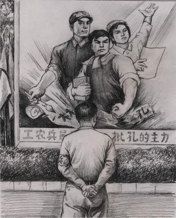

Tài liệu gốc: http://dajiyuan.com/gb/4/11/29/n731667.htm
|
 |
Văn hóa là linh hồn của của một dân tộc. Đối với nhân loại yếu tố tinh thần này cũng quan trọng không kém các yếu tố vật chất như giống nòi và đất đai.
Phát triển văn hóa định ra lịch sử nền văn minh của một dân tộc. Sự phá hủy hoàn toàn văn hóa của một dân tộc dẫn tới sự tiêu vong của dân tộc đó. Những dân tộc cổ xưa sáng tạo ra các nền văn minh huy hoàng đã bị xem như biến mất khi văn hóa của chúng biến mất, mặc dù người của các dân tộc đó vẫn tồn tại. Trung Quốc là quốc gia duy nhất trên thế giới có nền văn minh cổ đã liên tục trải qua trên 5000 năm. Sự phá hủy nền văn hóa truyền thống là một tội ác không thể tha thứ.
Nền văn hóa Trung Quốc, được tin là do Trời truyền xuống, đã bắt đầu từ những thần thoại như sự tạo ra trời và đất của Bàn Cổ [1], sự tạo ra con người của Nữ Oa [2], sự xác định hàng trăm cây thuốc của Thần Nông [3], và sự phát minh ra chữ Trung Quốc của Thương Hiệt [4]. “Người thuận theo đất, đất thuận theo trời, trời thuận theo Đạo, và Đạo thuận theo tự nhiên.” [5] Sự uyên thâm về sự hòa hợp giữa người và trời của Đạo gia đã chảy trong huyết mạch của nền văn hóa Trung Quốc. “Cái đạo của Đại Học là ở chỗ Đức sáng.” [6] Khổng Tử đã mở một trường để dạy học hơn 2000 năm về trước và đã truyền bá ra xã hội tư tưởng Nho gia bao gồm năm đức hạnh chính là nhân, nghĩa, lễ, trí, và tín. Trong thế kỷ đầu tiên, Phật Pháp của Phật giáo đã truyền sang phương đông tới Trung Quốc với sự nhấn mạnh vào tính thiện và sự cứu độ tất cả các chúng sinh đó là “từ bi phổ độ”. Nền văn hóa Trung Quốc đã được phong phú thêm. Sau đó, Nho gia, Đạo gia, và Phật gia đã trở thành các niềm tin bổ xung cho nhau trong xã hội Trung Quốc, đưa triều đại nhà Đường (618-907 sau Công Nguyên) lên đến tột đỉnh của sự huy hoàng và thịnh vượng, được biết đến trên khắp thế gian.
Mặc dù dân tộc Trung Quốc đã trải qua nhiều lần bị phá hoại và đả kích trong lịch sử, nền văn hóa truyền thống của Trung Quốc đã chứng tỏ là có sức sống, sức chịu đựng và bền bỉ to lớn, và tinh túy của nó đã liên tục được truyền xuống. Sự hòa hợp giữa trời và người (thiên nhân hợp nhất) đại biểu cho vũ trụ học của tổ tiên chúng ta. Mọi người đều tin rằng ở hiền gặp lành và ác lai ác báo (thiện ác hữu báo). Một đức hạnh cơ bản là đừng làm cho người khác những gì mình không muốn. Trung, hiếu, tiết, nghĩa là chuẩn mực cách làm người trong xã hội, và năm đức hạnh chính của Nho gia là nhân, nghĩa, lễ, trí, và tín đã đặt ra nền tảng đạo đức cho từng cá nhân và toàn xã hội. Văn hóa của Trung Hoa thể hiện ra Thành (thành thật) Thiện (lương thiện) Hòa (hòa vi quý) Dung (bao dung) những đặc điểm ưu tú này. Sự tưởng nhớ tới những người đã quá cố của người Trung Quốc cho thấy lòng sùng kính tới “trời, đất, vua, cha mẹ và thầy giáo” (thiên địa quân thân sư). Đây là sự biểu lộ văn hóa của các truyền thống gốc rễ của Trung Quốc, nó bao gồm sự kính trọng thần thánh trời và đất (thiên địa), sự trung thành với quốc gia (Quân), các giá trị của gia đình cha mẹ (Thân), và sự kính trọng thầy giáo (Sư). Nội hàm vững chắc của văn hóa là “Tôn sư trọng đạo”. Văn hóa Trung Quốc truyền thống đã tìm kiếm sự hài hòa giữa con người và vũ trụ, và đã chú trọng vào đạo đức và luân lý của từng cá nhân. Nó đã có cơ sở trên tín ngưỡng tu luyện của Đạo Khổng, Đạo Phật, và Đạo Lão, và đã cung cấp cho người Trung Quốc lòng khoan dung, sự tiến bộ xã hội, sự bảo vệ đạo đức con người, và niềm tin chân chính.
Không giống như pháp luật, mô tả các quy định cứng nhắc, văn hóa hoạt động như một chế ước mềm mại. Pháp luật thi hành trừng phạt sau khi một tội ác bị phạm phải, trong khi văn hóa, bằng cách giáo dục cho có đạo đức, ngăn ngừa các tội ác không cho xảy ra từ trong trứng nước. Giá trị chân lý Đạo đức của một xã hội thường phản ảnh cụ thể từ bên trong văn hóa của nó.
Trong lịch sử Trung Quốc, văn hóa truyền thống đã đạt tới đỉnh điểm của nó trong triều đại nhà Đường thịnh vượng, hội tụ tới đỉnh cao quyền lực của quốc gia Trung Quốc. Khoa học cũng tiến bộ và có được danh tiếng độc nhất vô nhị với tất cả các quốc gia khác. Các học giả từ Châu Âu, Trung Đông, và Nhật Bản đã đến để học tập tại Trường An, kinh đô của triều đại nhà Đường. Những nước lân bang với Trung Quốc đã xem Trung Quốc như là nước tông chủ. “Nhiều quốc gia đã đến để cống nạp cho Trung Quốc, chầu Vua như những ngôi sao chung quanh mặt trăng.” [7]
Sau triều đại nhà Tần (221-207 trước Công Nguyên (CN)), Trung Quốc thường bị xâm chiếm bởi những dân tộc thiểu số. Điều này đã xảy ra trong các triều đại nhà Tùy (581-618 sau CN), Đường (618-907 sau CN), Nguyên (1271-1361 sau CN) và Thanh (1644-1911 sau CN) và trong nhiều lần khác khi những nhóm sắc tộc thiểu số thành lập chế độ của riêng họ. Tuy nhiên, hầu như tất cả các nhóm sắc tộc này đã bị đồng hóa theo các cách của người Trung Quốc. Điều này cho thấy sức mạnh tích hợp to lớn của văn hóa Trung Quốc truyền thống. Như Khổng Tử đã nói, “(Vì vậy) nếu người từ xa không tuân theo, thì thu phục họ bằng cách tu văn và đức (của chúng ta).” [8]
Từ khi nắm quyền lực năm 1949,Đảng Cộng Sản Trung Quốc (ĐCSTQ) đã dành các tài nguyên quốc gia vào việc phá hủy nền văn hóa truyền thống của Trung Quốc. Ý định xấu này tuyệt đối không đến từ nhiệt tâm công nghiệp hóa của ĐCSTQ, cũng không đến từ sự ngu dốt giản đơn tôn thờ văn minh phương Tây. Hơn thế, nó đã đến từ sự đối nghịch ý thức hệ cố hữu của ĐCSTQ đối với văn hóa truyền thống của dân tộc. Vì vậy sự phá hoại văn hóa Trung Quốc của ĐCSTQ đã được lập kế hoạch, tổ chức tốt, và hệ thống hóa, được hỗ trợ bởi sự sử dụng bạo lực của nhà nước. Từ khi được thành lập, ĐCSTQ chưa hề bao giờ ngừng “cách mạng”, văn hóa của Trung Quốc xác thực đã bị phá hủy một cách triệt để.
Thậm chí còn đáng ti tiện hơn cả sự phá hoại văn hóa truyền thống của Trung Quốc là sự lạm dụng và sự thay đổi lừa lọc có chủ ý của ĐCSTQ đã phát huy những phần đồi bại từ lịch sử của Trung Quốc, những thứ đã xảy ra bất cứ khi nào con người xa rời các giá trị truyền thống, như là tranh giành quyền lực nội bộ bên trong gia đình hoàng tộc, sự sử dụng các thủ đoạn và âm mưu, và sự áp dụng chế độ độc tài và chuyên chế. Nó đã sử dụng các ví dụ lịch sử để giúp tạo thành một bộ chuẩn mực thiện ác, phương thức tư duy, và hệ thống đàm luận thị phi của nó. Bằng cách làm như vậy, khiến cho nhân dân hiểu lầm rằng đó là “văn hóa Đảng” là một sự kế thừa của văn hóa truyền thống Trung Quốc. ĐCSTQ thậm chí đã lợi dụng sự ác cảm của một số người đối với “văn hóa Đảng” để khuyến khích hơn nữa sự từ bỏ văn hóa truyền thống Trung Quốc chân chính.
Sự phá hoại văn hóa truyền thống của ĐCSTQ đã mang tới các hậu quả thảm khốc cho Trung Quốc. Không chỉ con người mất các ước thúc về đạo đức của họ, họ cũng bị bắt buộc phải thấm nhuần các lý thuyết tà ác của ĐCSTQ.
******************
Văn hóa chân chính của người Trung Quốc đã bắt đầu khoảng 5000 năm trước được sáng tạo bởi Hoàng Đế, người được cho là ông tổ đầu tiên của nền văn minh Trung Quốc. Trên thực tế Hoàng Đế cũng là người sáng lập nên tư tưởng Đạo gia, cũng được gọi là trường phái tư tưởng Hoàng-Lão (Hoàng Lão chi học). Nho gia chịu sự ảnh hưởng sâu sắc của Đạo gia. Ngài Khổng Tử giảng: “Lập chí ở đạo, căn cứ ở đức, noi theo ở nhân, học rộng ở lục nghệ” và “Nếu một người nghe Đạo buổi sáng, người đó có thể chết mà không hối hận vào buổi chiều.” [9] Cuốn Chu Dịch, một ghi chép về trời và đất, âm và dương, các thay đổi của vũ trụ, sự phát triển và suy tàn của xã hội, và các luật về cuộc sống con người, đã được Nho gia coi là “Số một trong số tất cả các tác phẩm kinh điển của Trung Quốc”. Sức mạnh tiên tri của cuốn sách đã vượt xa những gì khoa học hiện đại có thể nhận thức. Bên cạnh Đạo gia và Nho gia, tư tưởng Phật gia, đặc biệt tư tưởng phái Thiền tông, đã có một ảnh hưởng và thay đổi âm thầm lặng lẽ đối với những người trí thức Trung Quốc.
Tư tưởng Nho gia là phần văn hóa Trung Quốc truyền thống đã đặt trọng tâm vào “nhập thế.” Nó chú trọng vào đạo đức luân lý gia đình, ở đó lòng hiếu thảo đóng một vai trò cực kỳ quan trọng, dạy rằng “tất cả lòng tốt bắt đầu từ lòng hiếu thảo” (Bách thiện hiếu vi tiên). Khổng Tử đề cao “nhân, nghĩa, lễ, trí và tín,” nhưng cũng nói, “Chẳng phải lòng hiếu thảo và kính trên nhường dưới là gốc rễ của nhân đức?”
Luân thường đạo lý dựa trên nền tảng gia đình có thể được mở rộng một cách tự nhiên để hướng dẫn đạo đức xã hội. Lòng hiếu thảo có thể được khuyếch trương đến sự trung thành của quần thần đối với vua. Người ta nói rằng, “Hiếm khi một người có lòng hiếu để, có phạm thượng với bề trên”. [10] Để là kính yêu bậc huynh trưởng là mối quan hệ giữa anh em, và có thể được mở rộng hơn nữa đến sự nghĩa khí và sự công bằng giữa bè bạn. Nho gia dạy rằng trong gia tộc phải là phụ từ tử hiếu, huynh hữu, đệ cung, một người cha phải từ ái, một người con phải hiếu thảo, anh lớn phải thân thiện, và em nhỏ phải cung kính lễ phép. Ở đây, từ tâm của người cha có thể được mở rộng đến sự nhân nghĩa của quân chủ với quần thần. Chừng nào mà các truyền thống trong gia tộc có thể được duy trì, luân lý đạo đức xã hội tất nhiên có thể được giữ gìn. “Tu thân, tề gia, trị quốc, bình thiên hạ” [11]
Tư tưởng Phật gia và Đạo gia là bộ phận xuất thế trong văn hóa Trung Quốc truyền thống. Sự ảnh hưởng của Phật gia và Đạo gia có thể thấy trong tất cả các khía cạnh cuộc sống của dân chúng bình thường. Đông y, khí công, phong thủy, và bói toán. Những môn này có nguồn gốc liên quan đến tư tưởng của Đạo Gia rất sâu đậm, cũng như là những khái niệm trong tư tưởng Phật gia về thiên quốc và địa ngục, thiện ác báo ứng, cùng với đạo đức luân thường của tư tưởng Nho gia, đã tạo thành hạch tâm của văn hóa Trung Quốc truyền thống.
Tín ngưỡng Nho, Phật và Đạo đã đem lại cho người Trung Quốc một hệ thống tinh thần đạo đức rất ổn định, không thay đổi chừng nào trời đất còn tồn tại “thiên bất biến, đạo cũng bất biến”. [12] Sự bền vững, hòa bình và hài hòa trong xã hội, là dựa vào thế hệ đạo đức mà tồn tại.
Đạo đức thuộc về lĩnh vực tinh thần; vì vậy, nó thường thuộc về trừu tượng, mà còn về mặt tác dụng chủ yếu của văn hóa chính là sự diễn đạt thông thường nhất là đối với hệ thống đạo đức mà người thông thường có thể hiểu.
Hãy lấy “Bốn Tác Phẩm Kinh Điển Trung Quốc”, bốn tác phẩm nổi tiếng nhất trong văn hóa Trung Quốc, làm ví dụ. Tây Du Ký [13] là một chuyện thần thoại. Hồng Lâu Mộng [14] bắt đầu với hội thoại giữa một hòn đá có linh hồn và Mang Mang đạo sĩ, Diệu Diệu chân nhân cùng Không Không đạo nhân tại đỉnh Vô Kê, núi Đại Hoang, đoạn này cho con người đầu mối về kịch tính được bộc lộ trong tác phẩm. Thủy Hử [15] mở ra với câu chuyện về làm thế nào thái úy Hồng, người nắm binh quyền, đã bất cẩn giải phóng 108 yêu ma. Truyền thuyết này giải thích nguồn gốc của 108 vị anh hùng Lương Sơn Bạc. Tam Quốc Diễn Nghĩa [16] bắt đầu với một điềm báo của trời về một thảm họa, và kết thúc bằng sự phán xét không thể tránh được của luật Trời: “Hợp rồi tan, tan lại hợp, đó cũng là lẽ nhiệm mầu của Trời đất vậy”. Những câu chuyện nổi tiếng khác, như là Đông Chu Liệt Quốc [17] và Thuyết Nhạc Toàn Truyện (Chuyện đầy đủ về Nhạc Phi) [18], tất cả đều bắt đầu với những truyền thuyết tương tự.
Việc sử dụng thần thoại của những nhà viết tiểu thuyết này không phải là một trùng hợp, mà là sự phản ánh triết lý cơ bản của người trí thức Trung Quốc với tự nhiên và con người. Những tiểu thuyết này có một ảnh hưởng sâu sắc lên tâm trí người Trung Quốc. Khi nói về “nghĩa”, mọi người nghĩ đến Quan Vũ (160-219 sau CN) của Tam Quốc Diễn Nghĩa hơn chỉ là về khái niệm khô cứng của từ ngữ, nghĩa của ông ta đối với bạn của mình đã vượt lên mây tới trời xanh thế nào; lòng trung thành không thể lay chuyển của ông ta với bề trên và là anh em kết nghĩa (Lưu Bị) đã đem lại cho ông sự kính trọng, thậm chí từ kẻ thù của ông ta thế nào; sự dũng cảm của ông ta trong chiến trận đã chiến thắng trong các tình huống thảm khốc nhất, sự thất bại cuối cùng của ông trong trận chiến tại Mạch Thành, và, cuối cùng là, sự gặp gỡ của ông ta với tư cách là vị thần với con trai của ông thế nào. Khi nói tới chữ “trung” người Trung Quốc tự nhiên nghĩ tới Nhạc Vũ Mục (1103-1141 sau CN), một vị tướng nhà Tống người đã phục vụ đất nước của mình với tính chính trực và lòng trung thành hoàn toàn, và Khổng Minh (181-234 sau CN), thừa tướng của nước Thục trong thời Tam Quốc, người “hiến dâng cả đời cho đến tận khi trái tim ngừng đập.”
Sự ca ngợi trung và nghĩa của văn hóa Trung Quốc truyền thống đã được miêu tả đầy đủ trong những câu truyện đầy mầu sắc của các tác giả này. Những nguyên tắc tinh thần trừu tượng họ tán thành đã được làm rõ ràng và biểu hiện trong những thành ngữ văn hóa.
Đạo gia giảng chân. Phật gia giảng thiện, và Nho gia giảng trung, thứ (vị tha), nhân, nghĩa. “Mặc dù hình thức của chúng khác nhau, mục đích của chúng là như nhau… tất cả chúng đều truyền cảm hứng cho con người trở về với thiện.” [19] Đây là những khía cạnh giá trị nhất của văn hóa Trung Quốc truyền thống dựa trên niềm tin vào Nho, Phật và Đạo.
Văn hóa Trung Quốc truyền thống đầy những khái niệm và nguyên tắc như là thiên, đạo, thần, phật, mệnh, duyên, nhân, nghĩa, lễ, trí, tín, liêm, sỉ, trung, hiếu, tiết và còn nhiều nữa. Nhiều người Trung Quốc có thể mù chữ, nhưng họ vẫn quen với hí kịch truyền thống. Những hình thức văn hóa này đã là những phương cách quan trọng đối với người thường để học các đức hạnh truyền thống. Do đó, sự phá hoại của ĐCSTQ đối với văn hóa Trung Quốc truyền thống là một sự tấn công trực tiếp vào đạo đức của người Trung Quốc và làm suy yếu nền tảng an định và hài hòa trong xã hội.
“Triết học” của Đảng Cộng Sản hoàn toàn mâu thuẫn với văn hóa Trung Quốc truyền thống đích thực. Văn hóa truyền thống là kính úy thiên mệnh, như Khổng Tử đã từng nói, “Tử sanh hữu mệnh, phú quý tại thiên.” [20] Cả Phật gia và Đạo gia đều là hữu thần, và tin vào sự luân hồi, và thuyết nhân quả nghiệp lực về cái thiện và ác. Đảng Cộng Sản, thì trái lại, không chỉ tin vào thuyết vô thần mà còn “vô pháp vô thiên”. Nho gia coi trọng gia đình, nhưng Bản Tuyên Ngôn Cộng Sản rõ ràng công bố sự thủ tiêu gia đình. Văn hóa Trung Quốc phân biệt người Trung Quốc với người nước ngoài, nhưng Bản Tuyên Ngôn Cộng Sản chủ trương không có quốc gia. Văn hóa Nho gia đề cao lòng tốt với người khác, nhưng Đảng Cộng Sản cổ vũ đấu tranh giai cấp. Nho gia khuyến khích lòng trung thành với bề trên và tình yêu đất nước. Bản Tuyên Ngôn Cộng Sản đề xướng sự loại bỏ các quốc gia.
Để đạt được và duy trì quyền lực ở Trung Quốc, Đảng Cộng Sản đầu tiên đã gieo trồng những tư tưởng trái đạo đức trên mảnh đất Trung Quốc. Mao Trạch Đông đã tuyên bố, “Nếu chúng ta muốn lật đổ một quyền lực, trước tiên chúng ta phải tạo ra sự tuyên truyền, và làm việc trong lãnh vực hệ tư tưởng.” [21] ĐCSTQ đã nhận ra rằng lý thuyết cộng sản bạo lực, cái được tồn tại với vũ trang, bị tư tưởng Châu Âu từ chối và không thể đứng vững trước lịch sử văn hóa 5000 năm sâu sắc của Trung Quốc. “Đã chót thì phải chét”. Vì vậy ĐCSTQ đã hoàn toàn hủy hoại văn hóa Trung Quốc, và chỉ như vậy chủ nghĩa Mác - Lê (Marxist – Leninist) có thể chiếm lấy chính trường Trung Quốc.
Mao Trạch Đông đã từng nói là ông ta không theo Đạo cũng không theo Trời. [22] Văn hóa Trung Quốc Truyền thống không nghi ngờ gì nữa đã là một chướng ngại to lớn nên ĐCSTQ thách thức Đạo và chiến đấu với Trời.
Lòng trung thành trong văn hóa Trung Quốc truyền thống không có nghĩa là sự hết lòng mù quáng. Trong con mắt của mọi người, hoàng đế là “con của trời”: có trời ở bên trên ông ta. Hoàng đế không thể lúc nào cũng đúng. Do đó có nhu cầu cần những giám quan để chỉ ra những lỗi của hoàng đế vào mọi lúc. Hệ thống biên niên sử của Trung Quốc có những sử gia ghi chép lại mọi lời nói và hành động của hoàng đế. Các viên quan về giáo dục có thể trở thành thầy giáo vì lợi ích của vua, và hành vi của hoàng đế được phán quyết bởi các học giả Nho gia. Nếu hoàng đế trái đạo đức, không ngộ theo Đạo, mọi người có thể vùng lên để lật đổ ông ta, như là trường hợp khi Thành Thang phạt Kiệt, hoặc Vũ Vương phạt Trụ. [23] Những cuộc vùng lên đó, được phán quyết từ văn hóa truyền thống, không được coi là sự vi phạm lòng trung thành hoặc Đạo. Thay vào đó, chúng được xem như là thay trời hành Đạo. Khi Văn Thiên Tường (1236-1283 sau CN) [24], một tướng lĩnh nổi tiếng thời nhà Tống, bị bắt làm tù nhân, ông ta đã từ chối đầu hàng kẻ xâm lược Mông Cổ, thậm chí cả khi Hoàng Đế cố gắng thuyết phục ông ta đầu hàng. Điều này là bởi vì, vốn là một người theo Nho gia, ông ta tin rằng “Dân là quan trọng bậc nhất; tiếp theo là quốc gia; cuối cùng mới là người cai trị.” (dân vi quý, xã tắc thứ chi, quân vi khinh) [25]
ĐCSTQ độc tài có thể không có cách nào chấp nhận những niềm tin truyền thống như thế. ĐCSTQ đã muốn phong thánh những người lãnh đạo của chính nó và đề cao sự sùng bái cá nhân, và như thế sẽ không theo những khái niệm lâu đời như là Trời, Đạo, Thần cai quản phía trên. ĐCSTQ nhận thấy rằng nếu theo những tiêu chuẩn của văn hóa truyền thống thì những gì nó đã làm bị coi là tội ác to lớn và ghê tởm nhất chống lại Trời và Đạo. Họ cũng nhận thấy rằng chừng nào văn hóa truyền thống còn tồn tại, nhân dân sẽ không ca ngợi ĐCSTQ là “đảng ta vĩ đại, quang vinh, và đúng đắn.” Các học giả sẽ tiếp tục truyền thống “hy sinh cuộc sống của họ để khuyên răn vua,” “duy trì sự công bằng với cái giá cuộc sống của họ,” [26] và đặt dân lên trên những người cai trị. Vì vậy, nhân dân sẽ không trở thành những con rối của ĐCSTQ, và ĐCSTQ sẽ không thể bắt suy nghĩ của dân tuân theo theo ý mình.
Sự phản ánh của văn hóa truyền thống đối với trời, đất và tự nhiên đã trở thành một chướng ngại vật ngăn cản “cuộc chiến với thiên nhiên” của ĐCSTQ trong một nỗ lực “thay thế trời và đất.” Văn hóa truyền thống trân quý sinh mệnh con người, dạy rằng “bất kỳ tình huống nào liên quan đến sinh mệnh con người phải được xem xét với sự quan tâm lớn nhất.” Sự nhận thức như vậy là trở lực đối với tội diệt chủng hàng loạt và cai trị bằng bạo lực của ĐCSTQ. Tiêu chuẩn đạo đức cơ bản của văn hóa truyền thống về “Đạo Trời” gây trở ngại cho sự lợi dụng các nguyên tắc đạo đức của ĐCSTQ. Vì những lý do này, ĐCSTQ đã xem văn hóa truyền thống như một kẻ thù trong nỗ lực duy trì quyền lực của chính mình.
Văn hóa Trung Quốc truyền thống tin vào Thần và luật trời. Chấp nhận luật trời có nghĩa là những nhà cai trị phải thông thái, tuân theo Đạo và phải hòa hợp với vận mệnh. Việc chấp nhận niềm tin vào Thần nghĩa là chấp nhận rằng quyền lực đối với dân tùy thuộc vào trời.
Nguyên tắc cai trị của ĐCSTQ được tóm tắt lại, “Dây xích truyền thống sẽ không bao giờ trói buộc chúng ta nữa, sinh ra các bạn những người lao động cần cù không bao giờ là nô lệ nữa. Trái đất sẽ phát triển lên trên các nền tảng mới; chúng ta không phải là không; chúng ta sẽ là tất cả.” [27]
ĐCSTQ tuyên truyền chủ nghĩa duy vật lịch sử, tuyên bố rằng Chủ nghĩa cộng sản là một thiên đường trên trái đất, con đường tới đó được lãnh đạo bởi những người vô sản tiên phong, hoặc là Đảng Cộng Sản. Niềm tin vào Thần do đó đã trực tiếp thách thức tính hợp pháp của sự cầm quyền của ĐCSTQ.
******************
Mọi việc ĐCSTQ làm phục vụ một mục đích chính trị. Để nắm bắt, duy trì và củng cố sự chuyên chế của nó, ĐCSTQ cần thay thế tính người (nhân tính) bằng bằng tính Đảng (đảng tính) tà ma của nó, và thay thế văn hóa truyền thống Trung Quốc bằng văn hóa Đảng của nó là “giả, ác, đấu” (“lừa dối, độc ác và bạo lực.”) Sự phá hoại và thay thế này bao gồm các di tích văn hóa, di tích lịch sử và các cuốn sách cổ, chúng là hữu hình, và những thứ vô hình như là quan điểm truyền thống về đạo đức, cuộc sống và thế giới. Tất cả các khía cạnh đời sống nhân dân đều dính líu tới, bao gồm các hành động, suy nghĩ và lối sống của dân. Cùng lúc, ĐCSTQ coi các biểu hiện văn hóa bề mặt và tầm thường như là “tinh hoa”, giữ lại chúng, và sau đó đặt thứ “tinh hoa” này lên như mặt chính. Đảng giữ vẻ bề ngoài của truyền thống trong khi thay thế truyền thống thực bằng văn hóa Đảng. Khi đó nó lừa dối dân và xã hội quốc tế đằng sau bề ngoài “kế thừa và phát triển” văn hóa truyền thống Trung Quốc.
Do thực tế là văn hóa truyền thống có gốc rễ dựa vào tư tưởng Nho, Phật và Đạo, bước đầu tiên của ĐCSTQ trong việc phá hủy văn hóa truyền thống là tiêu diệt (sự) biểu lộ các nguyên tắc thần thánh trong thế giới con người, nhổ rễ ba tôn giáo tương ứng với chúng.
Tất cả ba tôn giáo chính Nho, Đạo Giáo và Đạo Phật, đã đụng độ sự phá hủy trong các khoảng thời gian lịch sử khác nhau. Lấy Đạo Phật làm ví dụ. Nó đã chịu bốn lần đại nạn chính trong lịch sử, lịch sử gọi là “Tam Vũ Nhất Tông” diệt Phật bởi bốn vị hoàng đế Trung Quốc.
Hoàng Đế Thái Vũ [28] của triều đại Bắc Ngụy (386-534 sau CN) và Hoàng Đế Vũ Tông [29] của triều đại Đường (618-907 sau CN) cả hai đều đã cố gắng làm tiêu tan Đạo Phật để thay bằng Đạo giáo. Hoàng Đế Vũ [30] của triều đại Bắc Chu (557-581 sau CN) đã cố gắng làm tiêu tan cả Đạo Phật và Đạo giáo, để sùng kính Đạo Nho. Hoàng Đế Chu Thế Tông [31] của triều đại Hậu Chu (951-960 sau CN) đã cố gắng làm tiêu tan Đạo Phật chỉ để sử dụng các tượng Phật để đúc tiền, và đã không đụng chạm đến Đạo Lão hay Đạo Khổng.
ĐCSTQ là triều đại duy nhất tiêu diệt cả ba tôn giáo cùng một lúc.
Ngay sau khi ĐCSTQ thành lập chính phủ, nó đã bắt đầu phá hủy các đền chùa, đốt kinh thư và bắt các tu sĩ và ni cô Phật giáo phải hoàn tục. Nó cũng không mềm hơn chút nào trong việc phá hủy các địa điểm của tôn giáo khác. Đến thập niên 60 của thế kỷ 20, hầu như không còn bất kỳ địa điểm tôn giáo nào còn lại ở Trung Quốc. Cuộc Đại Cách Mạng Văn Hóa đã mang đến những tai ương văn hóa và tôn giáo thậm chí lớn hơn trong chiến dịch gọi là “Phá Tứ Cựu” [32] - nghĩa là: phá bỏ quan niệm cũ, văn hóa cũ, phong tục cũ và thói quen cũ.
Ví dụ, ngôi chùa Phật giáo đầu tiên ở Trung Quốc là Chùa Bạch Mã [33] được xây dựng trong triều đại nhà Đông Hán (25-220 sau CN) ngoại thành Lạc Dương, tỉnh Hồ Nam. Nó có vinh dự là “Cái nôi của Phật giáo Trung Quốc” và “Nhà của Người Sáng Lập”. Trong “Phá Tứ Cựu”, Đền Bạch Mã tất nhiên không thể thoát khỏi cướp phá.
Có một đội sản xuất Chùa Bạch Mã gần ngôi chùa. Bí thư chi bộ Đảng đã dẫn nông dân tới đập tan ngôi chùa dưới danh nghĩa “cách mạng”. Những bức tượng Mười Tám Vị La Hán bằng đất sét 1000 năm tuổi được xây dựng dưới triều đại Liêu (916-1126 sau CN) đã bị phá hủy. Kinh Bối Diệp [34] mà một cao tăng Ấn độ mang tới đền 2000 năm trước đã bị đốt. Một vật quý hiếm, Ngựa Ngọc Bích, đã bị đập ta ra từng mảnh. Nhiều năm sau đó, vua Căm-pu-chia No-ro-dom Si-ha-nouk lưu vong đã có một yêu cầu đặc biệt muốn bày tỏ lòng kính trọng với Chùa Bạch Mã. Chu Ân Lai, thủ tướng Trung Quốc lúc bấy giờ, đã vội vã ra lệnh chuyển tới Lạc Dương kinh văn Bối Diệp đang được lưu trữ trong Hoàng Thành ở Bắc Kinh và các bức tượng Mười Tám Vị La Hán được làm từ triều nhà Thanh từ Chùa Bích Vân ở vườn Hương Sơn [35] ngoại ô Bắc Kinh. Với sự thay thế giả này, một khó khăn ngoại giao đã được “giải quyết”. [36]
Cuộc Cách Mạng Văn Hóa bắt đầu vào tháng năm, 1966. Nó thực sự là “cách mạng hóa” văn hóa Trung Quốc theo chiều hướng phá hủy. Bắt đầu từ tháng tám năm 1966, ngọn lửa điên cuồng của “Phá Tứ Cựu” đã cháy trên toàn bộ vùng đất Trung Quốc. Bị xem như là những đồ của “chế độ phong kiến, chủ nghĩa tư bản, chủ nghĩa xét lại”, các đền chùa Phật giáo, Đạo giáo, các bức tượng Phật, danh thắng cổ tích, bức thư pháp, hội họa và các tác phẩm mỹ thuật cổ đã trở thành những cái đích chính để phá hủy của Hồng Vệ Binh. [37] Lấy các tượng Phật làm ví dụ. Có 1000 tượng Phật được chạm khắc ngọc lưu ly trên đỉnh của Núi Vạn Thọ trong Cung Điện Mùa Hè (Di Hòa Viên) [38] ở Bắc Kinh. Sau “Phá Tứ Cựu”, tất cả chúng đã bị phá hủy. Không còn tượng nào còn nguyên ngũ quan nữa.
Thủ đô của đất nước là như thế, và cũng như vậy trên toàn bộ vùng còn lại của đất nước. Thậm chí cả những địa hạt ở xa cũng không thoát.
Có ngôi chùa Thiên Thai tại huyện Đại tỉnh Sơn Tây. Nó được xây dựng trong thời Thái Duyên của triều đại Bắc Ngụy 1600 năm trước và có những bức tượng và bích họa rất trân quý. Mặc dù nó nằm ở một sườn đồi khá xa dân cư của hạt, những người dân tham gia vào “Phá Tứ Cựu” cũng không ngại gian nan hiểm trở đến quét sạch các bức tượng và bích họa ở đó… Chùa Lạng Thiên, [39] nơi mà Lão Tử đã giảng bài và để lại tác phẩm nổi tiếng Đạo Đức Kinh 2500 năm trước, nằm ở huyện Chu Chí tỉnh Thiểm Tây. Xung quanh nơi mà Lão Tử giảng bài, trong vòng bán kính 10 dặm [40], có hơn 50 di tích lịch sử, bao gồm chùa Tông Thánh Cung (Tôn Kính Hiền Nhân) mà Hoàng Đế Đường Cao Tổ Lý Uyên Vi [41] đã xây dựng để bày tỏ lòng kính trọng Lão Tử 1300 năm trước. Bây giờ chùa Lạng Thiên và các di tích lịch sử khác đã bị phá hủy, và tất cả các đạo sĩ Đạo Lão đã bị bắt phải rời đi. Theo tiêu chuẩn của các Đạo sĩ, một khi một người trở thành Đạo sĩ, anh ta không bao giờ cạo râu hay cắt tóc. Tuy nhiên, bây giờ các Đạo sĩ bị bắt phải cắt tóc, bỏ áo choàng, và trở thành xã viên của công xã nhân dân. [42] Một số trong họ đã lấy con gái của các nông dân địa phương và trở thành con rể… Tại các thánh địa của Đạo Lão trong núi Lao Sơn ở tỉnh Sơn Đông, Thái Bình Cung, Thượng Thanh Cung, Hạ Thanh Cung, Đấu Mỗ Cung, Hoa Nghiêm Am, Ngưng Chân Quan, Quan Đế Miếu, ‘tượng thánh, bình cúng tế, cuộn kinh, di vật văn hóa, và miếu bia tất cả đều bị đập tan và đốt’… Văn Miếu ở Cát Lâm là một trong bốn miếu lớn nhất của Đạo Khổng tại Trung Quốc. Trong “Phá Tứ Cựu”, nó đã bị phá hủy cực kỳ nặng nề. [43]
Lê nin đã từng nói, “Cách dễ nhất để chiếm một pháo đài là từ bên trong.” Là một nhóm con cháu của học thuyết Mác xít-Lênin nít, ĐCSTQ hiểu điều này một cách tự nhiên và ngấm ngầm.
Trong “Đại Thừa Niết Bàn Kinh,” [44] Phật Thích Ca Mâu Ni đã tiên đoán rằng sau khi Ngài nhập niết bàn, ma quỷ sẽ chuyển sinh làm hòa thượng, ni cô, và nam nữ cư sĩ phá hoại làm loạn Phật Pháp. Tất nhiên, chúng ta không thể xác nhận Phật Thích Ca Mâu Ni ngụ ý đến những gì một cách chính xác. Tuy nhiên, sự phá hoại Đạo Phật của ĐCSTQ thực sự đã bắt đầu bằng cách thành lập một “mặt trận thống nhất” với một số tín đồ đạo Phật. Thậm chí họ đã gửi một số thành viên đảng cộng sản bí mật tới xâm nhập tôn giáo trực tiếp và phá hoại nội bộ. Trong một cuộc họp phê bình trong Cách Mạng Văn Hóa, ai đó đã hỏi Triệu Phác Sơ, phó chủ tịch Hiệp Hội Phật Giáo Trung Quốc lúc đó, “Ông là một Đảng viên, tại sao ông lại tin vào Phật Giáo?”
Phật Thích Ca Mâu Ni đã đạt ngộ trọn vẹn và cao nhất qua “giới định huệ.” Vì thế trước khi Ngài nhập niết bàn, ngài đã hướng dẫn đồ đệ của ngài “giữ gìn và duy trì cấm giới, chớ để giảm bớt hay vi phạm”. Ngài cũng đã cảnh báo, “Những người vi phạm Giáo Huấn bị trời, rồng, ma và quỷ thần ghê tởm. Tiếng xấu của họ sẽ lan xa và rộng… Khi cuộc sống của họ kết thúc, họ sẽ phải chịu đau khổ trong địa ngục để trả nghiệp, và gặp phải sự phán quyết cuối cùng không lay chuyển được. Sau đó họ sẽ xuất hiện. Họ sẽ tiếp tục chịu đau khổ bằng cách mang thân của ma đói và động vật. Họ sẽ chịu đau khổ trong luân hồi như thế vô tận mà không có sự giải thoát.” [45]
Các thày tu Phật giáo chính trị vểnh những cái tai điếc trước những lời cảnh báo của Phật. Năm 1952, ĐCSTQ gửi đại diện tới tham dự lễ ra mắt Hội Phật Giáo Trung Quốc. Tại buổi lễ này, nhiều ‘tín đồ’ đạo Phật trong hội đề nghị bãi bỏ những giới luật của Phật. Họ tuyên bố rằng những nguyên tắc này đã làm cho nhiều nam nữ thanh niên chết. Một số người thậm chí lại còn ủng hộ rằng “con người nên tự do tin vào bất kỳ tôn giáo nào. Nên cũng có tự do cho các thày tu và nữ tu sĩ lập gia đình, uống rượu, và ăn thịt. Không ai nên can nhiễu vào những việc này.” Vào lúc đó, Sư Phụ Hư Vân có mặt tại buổi lễ và đã thấy rằng Phật giáo đang đối mặt với nguy hiểm bị biến mất ở Trung Quốc. Ông ta đã bước ra chống đối lại những đề xuất này và kêu gọi gìn giữ những giáo huấn và hình thức của Đạo Phật. Sư phụ Hư Vân sau đó đã bị vu khống, và bị gán nhãn là “phản cách mạng.” Ông bị giam giữ trong phòng trụ trì, và đã từ chối thức ăn và nước uống. Thậm chí ông không được ra khỏi phòng để sử dụng nhà vệ sinh. Ông cũng bị ra lệnh phải trao vàng, bạc và súng ngắn của ông. Khi Hư Vân trả lời rằng ông không có gì, ông đã bị đánh quá trầm trọng đến mức sọ của ông bị rạn và chảy máu và xương sườn của ông bị gẫy. Hư Vân lúc đó đã 112 tuổi. Quân cảnh đã đẩy ông từ trên giường xuống đất. Khi họ quan trở lại ngày hôm sau và thấy rằng Hư Vân vẫn sống, họ lại đánh ông tàn nhẫn một lần nữa.
Hội Phật giáo Trung quốc được thành lập năm 1952 và Hội Đạo sĩ Trung quốc được thành lập vào năm 1957, cả hai đều rõ ràng công bố trong bản tuyên bố thành lập của mình rằng họ sẽ “dưới sự lãnh đạo của chính phủ nhân dân.” Trong thực tế, họ dưới sự lãnh đạo của ĐCSTQ vô thần. Cả hai hội đều cho thấy rằng họ sẽ chủ động tham gia vào các hoạt động xây dựng và sản xuất, và thực thi các chính sách của chính phủ. Họ đã bị chuyển hóa thành các tổ chức thế tục hoàn toàn. Tuy vậy những tín đồ Đạo Phật và Đạo Lão những người mà đã dành hết cho và tuân theo các giáo huấn đã bị gán nhãn là phản cách mạng hoặc là thành viên của những môn phái mê tín và những xã hội bí mật. Dưới khẩu hiệu cách mạng “làm trong sạch các tín đồ Đạo Phật và Đạo Lão”, họ đã bị bỏ tù, bắt phải “cải tạo qua lao động,” hoặc thậm chí bị xử tử. Thậm chí những tôn giáo truyền bá từ phương Tây, như là Cơ Đốc Giáo và Thiên Chúa Giáo cũng không được tha.
Dựa trên thống kê được đưa ra trong cuốn sách Đảng Cộng sản Trung quốc đã khủng bố các tín đồ Thiên Chúa Giáo như thế nào được xuất bản năm 1958, thậm chí chỉ trong con số giới hạn các tài liệu đã được xuất bản đã vạch ra cho thấy rằng trong số những mục sư những người bị gán là “địa chủ” hoặc “ác bá”, một con số gây sửng sốt 8840 người bị giết và 39200 người bị bắt vào các trại lao động. Trong số những mục sư bị gán là “phản cách mạng” 2450 người bị giết, và 24800 người bị bắt vào những trại lao động. [46]
Các tôn giáo là một cách cho con người tự rời khỏi thế giới trần tục và tự tu luyện. Họ nhấn mạnh vào “bờ bên kia” (bờ của giác ngộ hoàn toàn) và “thiên đường”. Đức Phật Thích Ca Mâu Ni đã từng là một vị hoàng tử Ấn Độ. Để tìm kiếm giải thoát [47], một trạng thái ở đó một người có thể nhận được yên bình trong tâm trí, trí huệ cao hơn, giác ngộ hoàn toàn, và niết bàn, [48] Ngài đã từ bỏ ngai vàng và đi vào một ngọn núi có nhiều cây để tu luyện bằng cách trải nghiệm những gian khổ và cực nhọc. Trước khi Đức chúa Giê Su giác ngộ, ma quỷ mang ngài tới đỉnh của một ngọn núi, cho ngài thấy tất cả các vương quốc trên thế giới với tất cả sự tráng lệ của nó. Ma quỷ nói, “Nếu ngài quỳ xuống và tôn thờ tôi, tôi sẽ cho ngài tất cả những thứ này.” Nhưng Đức Giê Su đã không bị dụ dỗ. Tuy vậy những thày tu và mục sư chính trị những người đã thành lập mặt trận thống nhất với ĐCSTQ đã tạo ra hàng loạt những lừa đảo và dối trá như là “Nhân gian Phật giáo”, và “tôn giáo là chân thật, và chủ nghĩa xã hội cũng như vậy”. Họ tuyên bố rằng “không có sự mâu thuẫn giữa bờ bên này và bờ bên kia.” Họ khuyến khích các tín đồ Đạo Phật và Đạo Lão theo đuổi hạnh phúc, danh tiếng, sự lộng lẫy, sự giàu có và địa vị trong cuộc đời này, và đã thay đổi các học thuyết tôn giáo và ý nghĩa của chúng.
Đạo Phật nghiêm cấm sát sinh. ĐCSTQ giết người như ruồi trong “ngăn chặn phản cách mạng.” [49] Các thày tu chính trị ngay sau đó giả mạo phán quyết rằng “giết những kẻ phản cách mạng là một việc thiện thậm chí còn lớn hơn nữa”. Trong “Cuộc Chiến Chống Lại Sự Xâm Lược Của Mỹ và Giúp Đỡ Triều Tiên” (1950-1953) [50], thậm chí các thày tu còn bị gửi trực tiếp tới chiến tuyến để chém giết.
Lấy Cơ Đốc giáo làm một ví dụ khác. Năm 1950, Ngô Diệu Tông [51] thành lập một giáo hội “Tam Tự”, nó theo nguyên tắc tự trì (quản), tự dưỡng và tự truyền. Ông ta tuyên bố rằng họ sẽ đập tan “chủ nghĩa đế quốc” và chủ động tham gia “Cuộc Chiến Chống Lại Sự Xâm Lược Của Mỹ và Giúp Đỡ Triều Tiên” Một người bạn tốt của ông ta đã bị tù hơn 20 năm vì từ chối tham gia Ba Tự và đã chịu đựng đủ loại tra tấn và làm nhục. Khi anh ta hỏi Ngô Diệu Tông, “Anh đánh giá thế nào về những phép mầu Đức Giê Su thực hiện?” Ngô đã trả lời, “Tôi vứt bỏ tất cả chúng”.
Không công nhận các phép màu của Đức Giê Su đồng nghĩa với không công nhận thiên đường của Đức Giê Su. Làm thế nào mà một người có thể được coi là một tín đồ đạo Cơ Đốc khi người đó thậm chí không công nhận thiên đường mà Đức Giê Su hướng đạo mọi người tới? Tuy nhiên, là người sáng lập của giáo hội “Tam Tự”, Ngô Diệu Tông đã trở thành một thành viên của Ban Cố Vấn Chính Trị danh tiếng. Khi ông ta đứng trước Đại Hội Trường Nhân Dân [52], ông ta chắc chắn đã hoàn toàn quên những lời của Đức Giê Su. “Yêu Chúa với tất cả trái tim, với tất cả linh hồn, và với tất cả tâm trí. Đây là điều răn đầu tiên và vĩ đại nhất.” (Matthew, 22:37-38) “Trả lại Xê-da những gì của Xê-da; và trả lại Chúa những gì là của Chúa” (Matthew, 22:21)
ĐCSTQ đã sung công các tài sản của chùa, bắt các thày tu và nữ tu nghiên cứu chủ nghĩa Mácxít-Lêninnít để tẩy não họ, và thậm chí bắt họ phải lao động. Ví dụ, có một “công trường Phật Giáo” ở thành phố Ninh Ba, tỉnh Chiết Giang. Hơn 25000 thày tu và nữ tu đã từng bị bắt phải làm việc ở đó. Những gì còn lố bịch hơn là ĐCSTQ khuyến khích các thày tu và nữ tu lập gia đình để mà hủy hoại Phật giáo. Ví dụ, ngay trước Ngày Phụ Nữ 8/3 năm 1951, Hội Phụ Nữ ở thành phố Tràng Sa, tỉnh Hồ Nam đã ra lệnh cho tất cả các nữ tu trong tỉnh phải quyết định lập gia đình trong một vài ngày. Thêm vào đó, các thày tu trẻ và khỏe bị bắt tham gia quân ngũ và bị gửi tới chiến trường để phục vụ như là bia đỡ đạn!
Nhiều nhóm tôn giáo ở Trung Quốc đã bị tan rã dưới sự đàn áp bạo lực của ĐCSTQ. Những người ưu tú chân chính trong Đạo Phật và Đạo Giáo cũng bị đàn áp. Trong số những người còn lại, nhiều người đã trở lại cuộc sống thế tục, và nhiều người khác đã là những Đảng viên bí mật chuyên mặc áo cà sa, [54] áo thụng của các Đạo sĩ hoặc áo dài của các linh mục để bóp méo các kinh Phật, tiêu chuẩn Đạo Giáo và Kinh Thánh và để tìm kiếm lý lẽ biện minh cho hành động của ĐCSTQ trong những học thuyết này.
Sự hủy hoại các di tích văn hóa là một phần quan trong trọng sự phá hoại văn hóa truyền thống của ĐCSTQ. Trong “Phá Tứ Cựu”, nhiều cuốn sách độc nhất, bức thư pháp, và bức họa được sưu tập bởi những người trí thức đã bị đốt trong lửa hoặc cắt vụn thành bột giấy. Chương Bá Quân [55] có một bộ sưu tập gia đình trên 10,000 cuốn sách. Những người cầm đầu Hồng Vệ Binh đã dùng chúng để đốt lửa sưởi ấm họ. Những gì còn lại bị gửi tới nhà máy giấy và cắt vụn thành bột giấy.
Chuyên gia phục chế hội họa và bức thư pháp, Hồng Thu Thanh, là một lão nhân được biết đến như là “thần y” đối với những bức tranh và bức thư pháp cổ. Ông đã phục chế vô số các kiệt tác tầm cỡ thế giới, như là tranh phong cảnh đời Tống Huy Tông [56], tranh tre của Tô Đông Pha [57], và các bức tranh của Văn Trưng Minh [58] và Đường Bá Hổ [59]. Qua nhiều thập kỷ, hầu hết hàng trăm bức tranh và bức thư pháp cổ mà ông đã cứu đã trở thành một bô sưu tập đứng đầu của quốc gia. Các bức tranh và bức thư pháp mà ông cứu chữa trong sưu tập đã bị gán nhãn là “Tứ Cựu” và đã bị đốt trong lửa. Sau đó, ông Hồng đã khóc trong nước mắt, “Hơn 100 cân [60] (50 kg) tranh và bức thư pháp, phải mất lâu lắm mới đốt hết được!” [61]
“Việc đời thay thế nhau,
Luân chuyển thành kim cổ;
Non sông lưu danh tích,
Đời đời ta ngưỡng xem” [62]
Nếu nhân dân Trung Quốc ngày nay vẫn nhớ một số việc trong lịch sử của mình, họ sẽ có thể cảm nhận một cảm giác khác lạ khi ngâm bài thơ này của Mạnh Hạo Nhiên. Các giang sơn thắng tích —địa điểm lịch sử bên các ngọn núi và dòng sông nổi tiếng nhất đã bị tàn phá và đã biến mất trong cơn bão “Phá Tứ Cựu.” Không chỉ là Lan Đình, ở đó Vương Hy Chi [63] đã viết tác phẩm nổi tiếng Lan Đình Tập Tự [64] đã bị phá hủy, phần mộ của chính Vương Hy Chi cũng đã bị tàn phá. Nơi ở của tổ tiên của Ngô Thừa Ân [65] ở tỉnh Giang Tô cũng bị phá hủy. Nơi ở của tổ tiên của Ngô Kính Tử [66] ở tỉnh An huy cũng bị phá tan, bia đá mà Tô Đông Pha đã viết bài Túy Ông Đình Ký [67] cũng đã bị đẩy đi bởi “những nhà cách mạng trẻ,” [68] và những chữ trên bia đá cũng bị cạo sạch.
Tinh hoa của văn hóa Trung Quốc đã được thừa kế và tích lũy qua nhiều ngàn năm. Một khi đã bị phá hủy, nó không thể được phục hồi lại. Nhưng ĐCSTQ đã man rợ phá hủy nó dưới danh nghĩa của “cách mạng” mà không có đau khổ hay xấu hổ gì. Khi chúng ta luyến tiếc vì Cung Điện Mùa Hè Cổ, được biết tới như là “cung điện của các cung điện”, bị đốt bởi Các Lực Lượng Đồng Minh Anh-Pháp, khi chúng ta luyến tiếc vì tác phẩm vĩ đại Bách Khoa Toàn Thư Yongle [69] bị phá hủy bởi ngọn lửa chiến tranh của những kẻ xâm lược, làm sao chúng ta lại có thể chấp nhận sự phá hủy của ĐCSTQ sẽ lan rộng nhiều hơn thế nữa, kéo dài hơn và triệt để hơn những sự phá hủy gây ra bởi bất kể kẻ xâm lược nào khác?
Bên cạnh sự phá hủy các hình thức vật chất của tôn giáo và văn hóa, ĐCSTQ cũng sử dụng khả năng lớn nhất của nó để phá hủy các đặc tính tinh thần của nhân dân mà đã được tạo ra bởi niềm tin và văn hóa.
Hãy lấy cách xử sự trên các niềm tin vô thần của ĐCSTQ làm ví dụ. ĐCSTQ xem xét các truyền thống của nhóm những người theo đạo Hồi là một trong “Tứ Cựu” - tư tưởng, văn hóa, truyền thống và thói quen cũ. Do đó, nó đã bắt những người theo đạo Hồi phải ăn thịt. Những nông dân theo đạo Hồi và những nhà thờ Hồi giáo bị bắt phải nuôi lợn, và mỗi gia đình phải cung cấp hai con lợn cho đất nước mỗi năm. Hồng Vệ Binh thậm chí còn bắt Đức Đệ Nhị Đại Hoạt Phật, Lạt Ma Ban Thiền, phải ăn phân người. Họ đã bắt ba thầy tu từ chùa Cấp Lạc ở thành phố Cáp Nhĩ Tân, tỉnh Hắc long giang, là ngôi chùa Phật giáo lớn nhất được xây dựng trong thời hiện đại (1921), phải dương một tấm bảng áp phích viết, “Địa ngục với kinh - chúng toàn là phân”.
Vào năm 1971, Lâm Bưu [70], Phó Chủ tịch Ban Chấp hành Trung ương ĐCSTQ, đã cố gắng thoát khỏi Trung Quốc nhưng đã bị giết khi máy bay của ông bị rơi ở Undurkhan, Mông Cổ. Sau đó, nơi ở của Lâm ở Bắc Kinh tại Mao Gia Loan, một số đoạn trích của Khổng Tử được tìm thấy. Sau đó ĐCSTQ đã bắt đầu hành động điên rồ “Phê bình Khổng Tử”. Một nhà văn có bút danh Lương Hiệu [71] đã đăng một bài báo trên tạp chí Hồng Kỳ, là tạp chí mang tính biểu ngữ của ĐCSTQ, nhan đề “Khổng Tử là ai?” Bài báo mô tả Khổng Tử như là một “người điên muốn quay ngược lịch sử lại”, và là một “kẻ mị dân khôn ngoan và lừa đảo”. Một chuỗi các tranh đả kích và bài hát đã theo sau, biến Khổng Tử thành quỷ.
Theo cách này, sự trang nghiêm thần thánh của văn hóa lẫn tôn giáo đã bị tiêu hủy.
Ở Trung Quốc xưa, chính quyền trung ương chỉ mở rộng các luật lệ của nó ở cấp tỉnh, ở cấp dưới là các thị tộc duy trì sự kiểm soát tự trị. Như vậy trong lịch sử Trung Quốc, sự phá hủy, như là “đốt sách và chôn các môn sinh Khổng giáo” của Hoàng Đế Tần Thủy Hoàng [72] trong triều đại nhà Tần (221-207 trước CN) và bốn chiến dịch để loại bỏ đạo Phật giữa thế kỷ thứ năm và thứ mười của “Tam Vũ Nhất Tông”, tất cả đều được đánh từ trên xuống, và đã không thể nhổ tận rễ văn hóa. Các tư tưởng và tác phẩm kinh điển của đạo Phật và đạo Khổng đã tiếp tục tồn tại trong những khoảng rộng lớn của xã hội. Đối ngược lại, chiến dịch “Phá Tứ Cựu” của những nam nữ sinh thanh thiếu niên được khuyến khích bởi ĐCSTQ là một hành động nhổ tận rễ trên toàn quốc với “sự hăng hái tự phát”. Sự mở rộng của ĐCSTQ tới mọi làng qua các chi nhánh Đảng tại làng đã điều khiển xã hội chặt chẽ tới mức mà hành động “cách mạng” của ĐCSTQ đã mở rộng không có giới hạn và đã ảnh hưởng mọi người trên mọi phân đất của Trung Quốc.
Không bao giờ trong lịch sử có bất kỳ vị hoàng đế nào nhổ tận rễ khỏi đầu óc nhân dân những gì họ coi là tuyệt vời nhất và thần thánh nhất, sử dụng sự truyền bá sỉ nhục và vu khống bên cạnh bạo lực, như là ĐCSTQ đã làm. Sự loại trừ niềm tin luôn có thể có ảnh hưởng và kéo dài hơn bất kỳ sự phá hủy vật chất đơn thuần.
Chữ viết của người Trung Quốc là hiện thân của tinh túy 5000 năm văn minh. Hình thức và phát âm của mỗi chữ, và các thành ngữ và ý nghĩa văn chương tạo thành từ sự kết hợp của các chữ, tất cả đều diễn đạt các ý nghĩa văn hóa sâu sắc. ĐCSTQ đã không chỉ làm đơn giản hóa chữ viết Trung Quốc, mà còn cố gắng thay thế chúng bằng hệ thống “phiên âm” La tinh, nó sẽ loại bỏ tất cả truyền thống văn hóa từ các chữ viết và ngôn ngữ Trung Quốc. Mặc dù kế hoạch đã bị thất bại, tuy thế tàn dư của nó đã gây thiệt hại cho ngôn ngữ Trung Quốc. Tuy nhiên, những người trí thức Trung Quốc thừa kế một văn hóa truyền thống đó đã không may mắn như vậy.
Trước năm 1949, Trung Quốc có khoảng hai triệu trí thức. Mặc dù một số đã học tập ở những nước phương Tây, họ vẫn thừa kế một số tư tưởng Khổng giáo. Chắc chắn là ĐCSTQ không thể buông lơi việc kiểm soát họ, bởi vì là các thành viên của tầng lớp “học giả quý tộc” truyền thống, cách nghĩ của họ đóng các vai trò quan trọng trong việc định hình tư tưởng của dân chúng.
Vào tháng 9 năm 1951, ĐCSTQ khởi xướng “vận động cải tạo tư tưởng” trên diện rộng bắt đầu với những người trí thức tại trường Đại Học Tổng Hợp Bắc Kinh , và yêu cầu “tổ chức một hành động (giữa các giáo viên trong các trường đại học, trung học và tiểu học, và giữa các sinh viên đại học) để thú nhận lịch sử của họ một cách trung thành và trung thực,” để mà tẩy rửa các nhân tố phản cách mạng.” [73]
Mao Trạch Đông không bao giờ thích những người trí thức. Ông ta nói, “Họ [những người trí thức] sẽ phải biết sự thực rằng thực tế thực tế nhiều người được gọi là trí thức, nói một cách tương đối, khá ngu dốt và những người công nhân và nông dân đôi khi biết nhiều hơn họ.” [74] “So sánh với những người công nhân và nông dân, những người trí thức chưa được cải tạo là không sạch sẽ, và phân tích đến cùng, thì những người công nhân và nông dân là những người sạch nhất, mặc dù tay của họ bẩn và chân của họ vấy phân bò…”[75]
Cuộc khủng bố những người trí thức của ĐCSTQ đã bắt đầu dưới nhiều hình thức kết tội, trải từ sự phê bình năm 1951 của Vũ Huấn [76] “làm trường học hoạt động bằng tiền xin được” (hành khất biện học) tới cuộc tấn công cá nhân của Mao Trạch Đông, năm 1955, kết tội nhà văn Hồ Phong phản cách mạng. [77] Ban đầu, giới trí thức không bị phân loại trong tầng lớp phản động, nhưng đến năm 1957, sau khi nhiều nhóm tín ngưỡng đã đầu hàng qua cuộc vận động “mặt trận thống nhất”, ĐCSTQ đã có thể tập trung sức mạnh của nó vào giới trí thức. Hành động “Đấu tranh chống cánh hữu” sau đó đã được bắt đầu.
Cuối tháng hai năm 1957, với tuyên bố “trăm hoa đua nở, trăm phái tranh luận”, ĐCSTQ đã kêu gọi những người trí thức nói lên các đề xuất và phê bình của họ với ĐCSTQ, hứa sẽ không có sự trả thù. Những người trí thức mà đã không hài lòng với ĐCSTQ trong một thời gian dài vì sự tàn phá của nó trên mọi lĩnh vực cho dù nó không phải là chuyên gia trên những lĩnh vực đó và vì sự giết hại thường dân vô tội của nó trong hành động “triệt tiêu phản cách mạng” thời kỳ 1950-1953 và để “loại bỏ phản cách mạng” thời kỳ 1955-1957. Họ đã nghĩ rằng ĐCSTQ cuối cùng đã trở nên cởi mở. Vì vậy họ đã bắt đầu nói ra cảm nghĩ thực của họ và sự phê bình của họ ngày càng lớn mạnh.
Nhiều năm sau đó, vẫn có nhiều người tin rằng Mao Trạch Đông chỉ bắt đầu tấn công những người trí thức sau khi đã trở lên thiếu kiên nhẫn với những lời phê bình quá gay gắt của họ. Tuy nhiên, sự thực hóa ra là khác.
Ngày 15 tháng 5 năm 1957, Mao Trạch Đông đã viết một bài báo nhan đề “Sự Tình Đang Bắt Đầu Thay Đổi” và lưu hành nó giữa những quan chức cấp cao của ĐCSTQ. Bài báo viết, “Trong những ngày gần đây những người cánh hữu… đã tự biểu lộ mình rõ ràng nhất và hung dữ nhất. Những người cánh hữu, là những người chống Cộng, đang thực hiện một cố gắng chia rẽ để khuấy động lên một cơn bão trên lực lượng thứ bảy ở Trung Quốc… và có xu hướng phá hủy Đảng Cộng Sản như vậy.” [78] Sau đó, những quan chức này [những quan chức] mà đã thờ ơ với chiến dịch “trăm hoa đua nở, trăm phái tranh luận” đột ngột trở nên hăng hái và “nghiêm chỉnh.” Trong hồi ký của mình “Quá khứ không biến mất như làn khói”, con gái của Chương Bá Quân đã kể lại:
“Lý Duy Hán, Bộ trưởng của Bộ Mặt Trận Thống Nhất, gọi cá nhân Chương Bá Quân để mời ông ta tham dự một cuộc họp sửa chữa để đề xuất ý kiến của ông ta về ĐCSTQ. Chương đã được sắp xếp để ngồi trên hàng ghế tràng kỷ đầu. Không biết đó là một cái bẫy, Chương nói rõ ràng các phê bình của ông về ĐCSTQ. Trong suốt buổi, “Lý Duy Hán có vẻ thư giãn. Chương có thể nghĩ Lý đồng ý với những gì ông ta nói. Ông ta không biết rằng Lý hài lòng khi thấy nạn nhân của mình rơi vào bẫy.” Sau cuộc họp, Chương được xếp vào loại cánh hữu số một ở Trung Quốc.”
Chúng ta có thể dẫn ra một chuỗi các ngày tháng trong năm 1957 đã đánh dấu các đề xuất hay diễn văn của những trí thức đưa ra các phê bình hay đề xuất: “Viện Thiết Kế Chính Trị” của Chương Bá Quân vào ngày 21 tháng năm; “Các Quan Điểm Chống Sai Lầm Của Xô Viết” của Long Vân vào ngày 22 tháng năm; “Bình phản ủy viên hội” của La Long Cơ ngày 22 tháng năm; diễn văn của Lâm Hy Linh về “Phê Bình Chủ Nghĩa Xã Hội Phong Kiến của ĐCSTQ” tại trường đại học Bắc Kinh vào ngày 30 tháng năm; “Đảng Nên Ngừng Dẫn Dắt Nghệ Thuật” của Ngô Tổ Quan vào ngày 31 tháng năm; “Sự Thống Trị Của Đảng Trên Thế Giới” của Chư An Bình vào ngày mùng một tháng sáu. Tất cả những đề xuất và diễn văn này đã được mời, và đã được đem ra hiến tế sau khi Mao Trạch Động đã mài sắc con dao đồ tể của mình.
Tất cả những trí thức này, có thể đoán được, sau đó đã bị gán nhãn cánh hữu. Có hơn 550,000 những người “cánh hữu” như vậy trên toàn quốc.
Truyền thống Trung Quốc có “Học giả thà chết chứ không chịu nhục” (sĩ khả sát bất khả nhục) ĐCSTQ có khả năng làm nhục những người trí thức bằng cách phủ nhận quyền sống của họ và thậm chí đổ trách nhiệm cho gia đình của họ nếu họ không chấp nhận sự nhục nhã. Nhiều trí thức đã đầu hàng. Trong suốt quá trình, một số họ tiếp tục nói những thứ [nhục nhã] khác để cứu chính mình, những thứ đã làm tan vỡ trái tim của nhiều người. Những người không chấp nhận nhục nhã đã bị giết, bị đem sử dụng như là ví dụ để hăm dọa các trí thức khác.
“Tầng lớp học rộng” truyền thống, hình mẫu của đạo đức xã hội, vì vậy đã bị phá hủy hoàn toàn. Mao Trạch Đông đã nói, “Tần Thủy Hoàng có thể khoe khoang về cái gì? Ông ta chỉ giết 460 nho sĩ, nhưng chúng ta đã giết 46,000 trí thức. Trong cuộc đàn áp phản cách mạng của chúng ta, chẳng phải chúng ta cũng đã giết một số trí thức phản cách mạng? Tôi đã tranh luận với những người phái dân chủ những người đã kết tội chúng ta hành động giống như Hoàng Đế Tần Thủy Hoàng. Tôi đã nói họ đã sai. Chúng ta đã vượt hơn ông ta hàng trăm lần.” [79]
Thực vậy, Mao đã làm nhiều hơn chỉ là giết các trí thức. Trầm trọng hơn, ông ta đã hủy diệt cả tín ngưỡng và tâm linh của họ.
Sau khi ĐCSTQ thực hiện cải cách kinh tế và chính sách mở cửa, nó hồi phục lại nhiều nhà thờ cũng như là chùa Phật giáo và Đạo giáo. Nó cũng tổ chức một số hội chùa ở Trung Quốc cũng như là hội văn hóa ở nước ngoài. Điều này là nỗ lực cuối cùng của ĐCSTQ để tận dụng và phá hủy văn hóa truyền thống còn sót lại. Có hai lý do để ĐCSTQ làm như vậy. Một mặt, lòng tốt vốn có của bản chất con người, mà ĐCSTQ không thể loại bỏ hết, sẽ dẫn tới sự phá hủy “văn hóa Đảng”. Mặt khác, ĐCSTQ đã có ý định sử dụng văn hóa truyền thống để bôi mỹ phẩm trang điểm bộ mặt thật của chúng để che đậy bản tính tà “lừa dối, độc ác và bạo lực” của chúng.
Tinh hoa của văn hóa là ý nghĩa đạo đức bên trong của nó, trong các hình thức bề mặt chỉ có giá trị giải trí. ĐCSTQ đã hồi phục lại những nhân tố bề mặt của văn hóa, phục vụ giải trí, để che đậy mục đích phá hủy đạo đức. Bất kể có bao nhiêu cuộc triển lãm bức thư pháp và nghệ thuật mà ĐCSTQ đã tổ chức, bao nhiêu lễ hội văn hóa với rồng và hổ nhảy múa trên sân khấu, Đảng chỉ đơn giản hồi phục lại vẻ bề ngoài, mà không phải là tinh hoa, của văn hóa. Trong khi ấy, ĐCSTQ xúc tiến các phần trình diễn văn hóa tách rời của nó cả trong và ngoài Trung Quốc về cơ bản chỉ vì một mục đích duy trì quyền lực chính trị.
Một lần nữa, lấy các chùa làm ví dụ. Các chùa có ý nghĩa là các địa điểm để con người tu luyện, nghe chuông buổi sáng và mõ buổi chiều hoàng hôn, kính ngưỡng Phật dưới ánh đèn dầu. Nhân dân trong xã hội con người thường cũng có thể xưng tội và thờ cúng ở đó. Tu luyện đòi hỏi một trái tim trong sạch không theo đuổi bất kể điều gì. Xưng tội và thờ cúng cũng đòi hỏi một môi trường chính thức và nghiêm trang. Tuy nhiên, các chùa đã bị biến thành các nơi du lịch vì mục đích lợi nhuận kinh tế. Trong số những người thực sự thăm viếng các chùa ở Trung Quốc ngày nay, bao nhiêu người đến để suy nghĩ về những lỗi lầm của mình với một trái tim thành thật và kính cẩn trước Phật ngay sau khi đã tắm và thay quần áo?
Phục hồi lại vẻ bề ngoài nhưng phá hủy ý nghĩa bên trong của văn hóa truyền thống là một thủ đoạn mà ĐCSTQ đã thực hiện để làm con người nhầm lẫn. Dù đó là Phật giáo, các tôn giáo khác, hoặc các hình thức văn hóa xuất phát từ chúng, ĐCSTQ cố tình làm suy biến giá trị của chúng theo cách này.
******************
Trong khi ĐCSTQ đang phá hủy văn hóa nửa-Thần truyền thống, nó thầm lặng thiết lập “Văn hóa Đảng” của chính nó thông qua các hành động chính trị liên tiếp. Văn hóa Đảng đã biến đổi thế hệ già, đầu độc thế hệ trẻ và cũng có ảnh hưởng lên trẻ con. Ảnh hưởng của nó là cực kỳ sâu và rộng. Thậm chí khi nhiều người cố gắng phơi bày sự tà ác của ĐCSTQ, họ không thể không tuân theo cách phán quyết tốt hay xấu, cách phân tích, và từ vựng đã được phát triển bởi ĐCSTQ, những thứ chắc chắn mang dấu ấn của văn hóa Đảng.
Văn hóa Đảng không chỉ thừa kế sự nguy hại bản chất của văn hóa Mác-Lê (Mácxít-Lêninnít) sinh ở ngoại quốc, mà còn phối hợp một cách đầy rẫy kỹ xảo tất cả các nhân tố tiêu cực từ hàng ngàn năm văn hóa Trung Quốc với cuộc cách mạng bạo lực và triết lý đấu tranh từ sự truyền bá của Đảng. Những thành phần tiêu cực này bao gồm đấu tranh nội bộ dành quyền lực bên trong các gia đình hoàng tộc, hình thành các phường hội để theo đuổi các quyền lợi cá nhân, thủ đoạn gian trá chính trị để làm những người khác phải đau khổ, các mánh khóe và âm mưu bẩn thỉu. Trong suốt cuộc đấu tranh của ĐCSTQ để sống sót trong các thập kỷ qua, đặc tính “lừa dối, độc ác và bạo lực” của nó đã được làm giàu thêm, nuôi nấng và chuyển sang trang mới.
Chế độ chuyên quyền và độc tài là bản chất của văn hóa Đảng. Văn hóa này phục vụ Đảng trong các cuộc đấu tranh giai cấp và chính trị. Một người có thể hiều môi trường “nhân văn” khủng bố và chuyên quyền của Đảng đã được nó lập ra như thế nào từ bốn khía cạnh.
A. Văn hoá bưng bít
Văn hóa của Đảng Cộng Sản là một độc quyền riêng rẽ mà không có tự do tư tưởng, ngôn luận, hiệp hội hay niềm tin. Cơ chế thống trị của Đảng là tương tự như một hệ thống ống dẫn nước, dựa trên áp lực cao và sự cách ly để duy trì tình trạng kiểm soát của nó. Thậm chí một lỗ rò nhỏ xíu có thể dẫn tới sự sụp đổ của toàn hệ thống. Ví dụ, Đảng từ chối đối thoại với sinh viên trong biến động sinh viên ngày mồng bốn tháng sáu [80], sợ rằng nếu lỗ rò này phun ra, công nhân, nông dân, trí thức và quân đội cũng có thể đòi đối thoại, và rồi, Trung Quốc sẽ thực sự tiến tới dân chủ và nền chuyên chính một đảng sẽ bị thay đổi. Do đó, họ đã chọn giết người hơn là thừa nhận đề nghị của sinh viên. Ngày nay ĐCSTQ sử dụng hàng chục ngàn “cảnh sát mạng” để theo dõi mạng Internet và trực tiếp ngăn chặn bất kỳ mạng lưới (website) ngoại quốc nào mà ĐCSTQ không thích.
B. Văn hóa khủng bố
Trong 55 năm qua, ĐCSTQ đã sử dụng khủng bố để đàn áp tâm trí của nhân dân Trung Quốc. Họ đã cầm và sử dụng roi da và dao đồ tể - nhân dân không bao giờ biết khi nào những thảm họa không thấy trước được sẽ xảy ra với họ - để bắt nhân dân tuân theo. Nhân dân, sống trong sợ hãi, trở lên ngoan ngoãn. Những người chủ trương dân chủ, những nhà tư tưởng độc lập, những người theo chủ nghĩa hoài nghi trong hệ thống (của ĐCSTQ) và những thành viên của những nhóm tinh thần khác nhau đã trở thành những mục tiêu để giết như là một cách để răn đe công chúng. Đảng muốn đập tan bất kỳ sự đối lập nào từ trong trứng nước.
C. Một văn hóa khống chế theo mạng lưới
Sự kiểm soát xã hội của ĐCSTQ là bao gồm tất cả. Có hệ thống hộ khẩu hộ tịch, hệ thống ủy ban dân cư, và nhiều đa dạng các tầng cấp cấu trúc ban đảng. “Các chi nhánh Đảng được thiết lập tại tầng mức công ty.” “Mỗi và mọi làng có chi nhánh Đảng của mình.” Các thành viên của Đảng và Đội Thanh Niên Cộng Sản có những hoạt động đều đặn. ĐCSTQ cũng cổ vũ một chuỗi các khẩu hiệu tương ứng. Một vài ví dụ: “Canh cửa nhà bạn và theo dõi nhân dân của bạn”. “Ngăn chặn nhân dân của bạn không bị lôi cuốn”. “Kiên quyết thực thi chế độ để bắt cáng đáng trách nhiệm, bảo đảm hoàn thành các trách nhiệm, và chắc chắn trách nhiệm nằm ở đâu. Canh gác và kiểm soát một cách chặt chẽ. Nghiêm túc với kỷ luật và quy tắc và bảo đảm các biện pháp kiểm soát duy trì và ngăn ngừa 24 giờ”. “Văn phòng 610 [81] sẽ thành lập một ủy ban giám sát để kiểm tra và theo dõi các hoạt động trong mỗi vùng và đơn vị công tác vào những khoảng thời gian bất thường”.
D. Văn hóa vạ lây
ĐCSTQ đã hoàn toàn lờ đi các nguyên lý cai trị theo luật trong xã hội hiện đại và mạnh mẽ thúc đẩy các chính sách “liên luỵ”. Nó đã sử dụng quyền lực tuyệt đối của mình để trừng phạt họ hàng của những người bị gán nhãn là “chủ đất”, “giàu”, “phản động”, “phần tử xấu” và “cánh hữu” (địa, phú, phản, hoại, hữu). Nó đã đề xuất ra thuyết “xuất thân”. [82]
Ngày nay, ĐCSTQ sẽ “gắn liền trách nhiệm của những nhà lãnh đạo hàng đầu và công khai khiển trách họ, nếu họ thất bại trong vai trò lãnh đạo của họ đối với việc có những biện pháp thích hợp để ngăn chặn các học viên Pháp Luân Công đi tới Bắc Kinh khuấy động rắc rối. Đối với những trường hợp nghiêm trọng, hành động kỷ luật sẽ được thực hiện.” “Nếu một người luyện tập Pháp Luân Công, mọi thành viên trong gia đình sẽ bị thải hồi tạm thời.” “Nếu một nhân viên luyện tập Pháp Luân Công, thưởng của mọi người trong toàn bộ công ty sẽ bị giữ lại.” ĐCSTQ cũng ban hành những chính sách rõ ràng phân loại trẻ em thành “có thể được giáo dục và chuyển hóa” hoặc “năm giai cấp đen” (chủ đất, nông dân giàu, phản động, phần tử xấu và cánh hữu). Đảng thúc đẩy việc tuân theo Đảng và “đặt sự công bằng lên trên lòng trung thành gia đình.” Những hệ thống, như là hệ thống lưu trữ cá nhân và tổ chức và hệ thống tạm trú, đã được thiết lập để bảo đảm sự thực thi cách chính sách. Nhân dân được khuyến khích tố cáo và vạch trần những người khác, và được thưởng cho những đóng góp với Đảng.
A. Văn hóa tuyên truyền một chiều
Trong Cách mạng Văn Hóa, Trung Quốc đầy những khẩu hiệu như: “Những chỉ thị tối cao,” “Một câu (của Mao) nặng bằng mười ngàn câu, mỗi câu là một chân lý.” Tất cả các phương tiện truyền thông đều được khua để phát những lời ngợi ca và ủng hộ Đảng một cách chọn lựa. Khi cần, những lãnh đạo từ mọi tầng cấp của Đảng, chính phủ, quân đội, công nhân, đội thanh niên và các tổ chức phụ nữ sẽ được mang ra để bày tỏ sự ủng hộ của họ với Đảng. Mọi người đã phải đi qua thử thách đó.
B. Văn hóa khuyến khích bạo lực
Mao Trạch Đông đã nói, “Với 800 triệu dân, làm sao có thể hoạt động được mà không có đấu tranh?” Trong sự khủng bố Pháp Luân Công, Giang Trạch Dân đã nói, “Dẫu đánh những người luyện tập Pháp Luân Công tới chết thì cũng sẽ không bị trừng phạt.” ĐCSTQ chủ trương “chiến tranh toàn diện,” và “quả bom nguyên tử đơn giản chỉ là một con hổ giấy… thậm chí nếu một nửa dân số chết, nửa còn lại vẫn có thể xây dựng tổ quốc chúng ta từ đống đổ nát.”
C. Văn hóa kích động lòng căm thù
“Không quên sự đau khổ của các tầng lớp (người nghèo), và vững chắc nhớ sự thù hằn trong nước mắt và máu” đã trở thành một chính sách quốc gia cơ bản. Sự tàn bạo đối với các kẻ thù giai cấp đã được ngợi ca như một đức hạnh. ĐCSTQ đã dạy “Cắn vào lòng căm thù của bạn, nhai nó và nuốt nó xuống. Gieo trồng lòng căm thù trong trái tim của bạn để nó nảy mầm.” [83]
D. Văn hóa lừa gạt và dối trá
(Đây là một vài ví dụ về những lời nói dối của ĐCSTQ). “Lợi tức trên mỗi mẫu [84] là quá mười ngàn cân” trong Đại Nhảy Vọt (1958). “Không một người nào bị giết trên Quảng Trường Thiên An Môn” trong cuộc tàn sát ngày 4 tháng 6 năm 1989. “Chúng ta đã kiểm soát virus SARS” năm 2003, “Hiện tại là thời gian tốt nhất cho nhân quyền ở Trung Quốc.” và cái gọi là “Tam đại biểu” [85]
E. Văn hóa tẩy não
Đây là một số khẩu hiệu mà ĐCSTQ đã làm để tẩy não nhân dân: “Sẽ không có một Trung Quốc mới nếu không có Đảng Cộng Sản.” “Lực lượng nòng cốt dẫn dắt niềm tin của chúng ta tiến lên là ĐCSTQ và cơ sở lý thuyết dẫn đường tư tưởng chúng ta là Mác xít - Lê nin nít” [86] “Duy trì sự liên kết tối đa với Ban Chấp hành Trung ương Đảng.” “Thực hiện lệnh của đảng nếu bạn hiểu nó. Thậm chí nếu bạn không hiểu, cứ thực hiện nó và sự hiểu của bạn sẽ sâu sắc trong khi thực hiện các mệnh lệnh.”
F. Văn hóa nịnh hót
“Thiên đường và trái đất là vĩ đại nhưng vĩ đại hơn vẫn là lòng tốt của Đảng;” “Chúng ta hàm ơn Đảng tất cả những gì chúng ta đạt được;” “Tôi coi Đảng như mẹ của tôi;” “Dùng sinh mệnh mình để bảo vệ Ban Chấp hành Trung ương Đảng.” “Đảng vĩ đại, vinh quang và chính xác.” “Đảng luôn chiến thắng”, và vân vân.
G. Văn hóa tự tôn
Đảng đã thành lập các mô hình và tạo ra các ví dụ hết cái này đến cái khác, và đã phát động các chiến dịch “kiến thiết văn minh tinh thần xã hội chủ nghĩa” và “giáo dục ý thức hệ”. Cuối cùng, nhân dân đã tiếp tục làm những gì họ đã làm trước khi có mỗi chiến dịch. Tất cả các bài giảng công khai, buổi học, và chia sẻ kinh nghiệm trở thành để “trưng bày nghiêm chỉnh trong tủ kính”, và tiêu chuẩn đạo đức xã hội tiếp tục có những bước nhảy lùi lớn.
A. Văn hóa tật đố ganh tỵ
Đảng đã đẩy mạnh “chủ nghĩa tuyệt đối bình quân” để mà “bất kể ai đứng ngoài sẽ trở thành đích tấn công.” Nhân dân ghen tị với những ai có khả năng lớn hơn và những ai giàu có hơn - cái được gọi là “bệnh mắt đỏ.” [87]
B. Văn hóa mọi người dẫm đạp lên nhau
ĐCSTQ đã khuyến khích “mặt đối mặt đấu tranh và lưng tựa lưng báo cáo”. Chỉ điểm những đồng nghiệp, viết những tài liệu để dựng lên chuyện cho họ, bịa đặt ra các sự kiện và thổi phồng các lỗi lầm của họ - những hành vi cong queo này đã được sử dụng làm tiêu chí để đo lường sự gần gũi với đảng và sự mong muốn tiến bộ.
A. Một văn hóa chuyển hóa con người thành những cỗ máy
Đảng muốn nhân dân là “những con ốc không bao giờ rỉ trong cỗ máy cách mạng,” là “công cụ được thuần hóa cho Đảng,” hoặc để “Tấn công vào bất kỳ hướng gì mà Đảng chỉ chúng ta.” “Những người lính của chủ tịch Mao nghe theo Đảng nhất, họ đi bất cứ đâu cần họ và làm ổn định bất cứ đâu có thử thách gay go”.
B. Một văn hóa điên đảo thị phi
Trong Cách Mạng Văn Hóa, ĐCSTQ muốn “có cỏ dại xã hội chủ nghĩa hơn là vụ mùa tư bản chủ nghĩa.” Quân đội bị ra lệnh bắn và giết trong cuộc tàn sát ngày 4 tháng 6 để “đổi lấy 20 năm ổn định.” ĐCSTQ cũng “Làm cho người khác những gì một người không muốn làm cho chính mình”
C. Một văn hóa tự tẩy não và tuyệt đối phục tùng
“Cấp dưới tuân lệnh cấp trên và toàn Đảng tuân theo Ban Chấp hành Trung ương Đảng.” “Đánh không thương xót để nhổ rễ bất kỳ tư tưởng ích kỷ nào nổi lên trong tâm trí bạn.” “Nổ ra một cuộc cách mạng tận sâu trong tâm hồn bạn.” “Duy trì liên kết tối đa với Ban Chấp hành Trung ương Đảng.” “Thống nhất tư tưởng, thống nhất bước chân, thống nhất mệnh lệnh, và thống nhất chỉ huy.”
D. Một văn hóa bảo vệ vị trí của kẻ nô tài
“Trung Quốc sẽ bị hỗn loạn nếu không có Đảng Cộng Sản;” “Trung Quốc quá lớn. Ai khác có thể lãnh đạo Trung Quốc ngoài ĐCSTQ?” “Nếu Trung Quốc sụp đổ, nó sẽ là một thảm hoạ trên toàn thế giới, vì vậy chúng ta phải giúp ĐCSTQ duy trì sự lãnh đạo của nó.” Bên ngoài sự sợ hãi và tự bảo vệ, những nhóm liên tục bị đàn áp bởi ĐCSTQ thường thường có vẻ ngả theo cánh tả thậm chí hơn [là theo] ĐCSTQ.
******************
Những ví dụ quanh vấn đề này còn có rất nhiều. Mọi độc giả có thể tìm thấy nhiều loại yếu tố của văn hóa Đảng từ các kinh nghiệm cá nhân mình.
Những người đã trải qua Cách Mạng Văn Hóa có thể vẫn nhớ một cách sống động “Vở Kịch Mẫu” của nhạc kịch hiện đại, Các Bài Hát có lời của Mao như là các bài thơ trữ tình, và Điệu Nhảy Trung Thành. Nhiều người vẫn nhắc lại các lời từ các cuộc hội thoại trong Bạch Mao Nữ [88], Chiến Tranh Địa Đạo [89], và Chiến Tranh Địa Lôi [90]. Qua những tác phẩm văn chương này, ĐCSTQ đã tẩy não nhân dân, nhồi nhét một cách bắt buộc vào tâm trí họ những thông điệp như Đảng “anh minh vĩ đại”; đảng đã đấu tranh chống kẻ thù “gian khổ và dũng cảm” thế nào; những người lính của Đảng đã “hiến dâng tất cả cho Đảng” thế nào; họ đã vui sướng được hi sinh mình cho Đảng thế nào; và kẻ thù xấu xa và ngu ngốc thế nào. Ngày này qua ngày khác, sự tuyên truyền của bộ máy ĐCSTQ tiêm một cách bắt buộc vào mọi cá nhân niềm tin cần thiết của Đảng Cộng Sản. Ngày nay, nếu một người trở lại để xem “Bài Thơ Anh Hùng” của liên hoan khiêu vũ nhạc - “Phương Đông Màu Đỏ”, anh ta sẽ nhận ra rằng toàn bộ chủ đề và phong cách của buổi chiếu là về “giết, giết, và giết nhiều hơn.”
Đồng thời, ĐCSTQ đã tạo ra hệ thống diễn văn và thuyết trình của nó, như là ngôn ngữ sỉ nhục trong phê bình số đông, những lời tâng bốc để hát những lời ca ngợi Đảng, và những quy phạm chính thức sáo rỗng tương tự như là “tiếu luận tám đoạn.” [91] Nhân dân bị làm cho nói một cách không có ý thức theo các hình mẫu suy nghĩ khuyến khích khái niệm “đấu tranh giai cấp” và để “ca tụng Đảng”, và sử dụng ngôn ngữ độc đoán thay vì lập luận lý tính và êm đềm.
Một bước nhằm vượt qua chân lý là ảo tưởng. Văn hóa đảng ĐCSTQ cũng lạm dụng đạo đức truyền thống tới một mức độ nhất định. Ví dụ, văn hóa truyền thống coi trọng “tín”, Đảng Cộng Sản cũng vậy. Tuy nhiên những gì nó đề xướng là “trung thành và trung thực với Đảng”. Văn hóa truyền thống nhấn mạnh “hiếu”. ĐCSTQ có thể bỏ người vào nhà tù nếu họ không chu cấp cho cha mẹ của họ, nhưng lý do thực là nếu không những người cha mẹ này sẽ trở thành “gánh nặng” cho chính phủ. Văn hóa truyền thống nhấn mạnh vào “trung”. Tuy thế, “dân là quan trọng bậc nhất, quốc gia theo sau, cuối cùng mới là những người cai trị” (quân khinh dân quý, xã tắc vi trọng). “Trung” mà ĐCSTQ ưa thích là “sự hiến dâng mù quáng” - hoàn toàn mù quáng tới mức dân bị đòi hỏi phải tin vào ĐCSTQ vô điều kiện và tuân theo nó mà không có thắc mắc gì.
Những lời thường được sử dụng bởi ĐCSTQ là rất lừa dối. Ví dụ, nó đã gọi nội chiến giữa Quốc Dân Đảng và Cộng Sản là “Chiến Tranh Giải Phóng”, như thể là người dân đã được giải phóng khỏi sự áp bức. ĐCSTQ đã gọi thời kỳ sau 1949 là “sau khi thành lập quốc gia”, khi mà, trong thực tế, Trung Quốc đã tồn tại lâu trước đó. ĐCSTQ đơn giản chỉ là kẻ đảo chính thành lập một chế độ chính trị mới. Ba năm Đại Đói Kém [92] được gọi là “ba năm thảm họa thiên nhiên,” trong khi, thực tế là, nó không phải thảm họa thiên nhiên chút nào, mà hoàn toàn là tai họa do con người gây ra. Tuy nhiên, nghe những lời này được sử dụng trong cuộc sống thường ngày và bị chúng ảnh hưởng một cách không thể nhận thấy, người dân vô tình chấp nhận những khái niệm mà ĐCSTQ đã có ý định truyền cho họ.
Trong văn hóa truyền thống, nhạc được xem là một phương thức để kiềm nén dục vọng. Trong Lạc Thư (Nhạc Thư), Tập 24 của Sử Ký, Tư Mã Thiên (145-85 trước CN) [93] đã nói rằng bản tính của con người là hòa bình; cảm giác với những vật chất bên ngoài ảnh hưởng cảm xúc của một người và khuấy động lên tình yêu và ghét dựa trên đặc tính và trí tuệ của một người. Nếu những tình này không bị kiềm nén, một người sẽ bị cám dỗ bởi vô vàn các cám dỗ bên ngoài và sẽ bị đồng hóa bởi những nội tâm xấu và phạm vào nhiều hành động xấu. Vì vậy Tư Mã Thiên đã nói, các hoàng đế trong quá khứ sử dụng sách dạy lễ nghi và nhạc để tiết chế dân. Các bài hát nên “vui vẻ nhưng không tục tĩu, buồn nhưng không quá đau đớn.” Chúng nên bày tỏ cảm giác và mong muốn, mà vẫn kiểm soát những tình này. Không Tử đã nói trong Luận Ngữ, “Ba trăm câu thơ Kinh Thi (một trong sáu tác phẩm kinh điển được thu thập và diễn giải bởi Khổng Tử) có thể tóm tắt trong một câu, ‘không nghĩ tà’.
Một thứ đẹp như là nhạc, tuy nhiên, đã bị sử dụng bởi ĐCSTQ như là một phương pháp để tẩy não nhân dân. Những bài hát như là “Chủ nghĩa xã hội là tốt,” “Sẽ không có Trung Quốc mới nếu không có Đảng Cộng Sản,” và nhiều bài khác, đã được hát từ lớp mẫu giáo cho đến đại học. Khi hát lên những bài hát này, người dân đã vô tình chấp nhận những ý nghĩa bên trong của ca từ. Hơn nữa, ĐCSTQ đã ăn trộm giai điệu của những bài hát dân gian du dương nhất và thay thế chúng bằng lời ca ngợi Đảng. Điều này đã phục vụ cả việc phá hủy văn hóa truyền thống và đề cao Đảng.
Một trong những tài liệu kinh điển của ĐCSTQ, “Diễn văn tại tọa đàm Duyên An về Văn học và Nghệ thuật” [94] đã đặt các nỗ lực văn hóa và quân đội như là “hai chiến tuyến”. Nó đã tuyên bố rằng chỉ có quân đội được trang bị là chưa đủ; một “quân đội của văn hoá” cũng cần. Nó đã quy định rằng “nghệ thuật văn học nên phục vụ chính trị” và “nghệ thuật văn học của tầng lớp giai cấp vô sản… là “các bánh xe và đinh ốc” của cỗ máy cách mạng.” Một hệ thống hoàn thiện “văn hóa Đảng” đã được phát triển từ điều này, với “thuyết vô thần” và “đấu tranh giai cấp” là tinh hoa của nó. Hệ thống này hoàn toàn đi ngược lại văn hóa truyền thống.
“Văn hóa Đảng” thực chất đã phục vụ xuất sắc trong việc giúp đỡ ĐCSTQ đạt được quyền lực và kiểm soát xã hội. Giống như quân đội, nhà tù và lực lượng cảnh sát của nó, văn hóa Đảng cũng là một bộ máy bạo lực, nó cung cấp một loại bạo lực khác - “bạo lực văn hóa”. Sự bạo lực văn hóa này, bằng cách phá hủy 5000 năm văn hóa truyền thống, đã làm thui chột ý chí của người dân, và phá hoại ngầm sự kết dính của quốc gia Trung Quốc.
Ngày nay, nhiều người Trung Quốc hoàn toàn không biết tinh hoa của văn hóa truyền thống. Một số thậm chí còn đặt ngang hàng 50 năm “văn hóa Đảng” với 5000 năm văn hóa truyền thống Trung Quốc. Đây là một điều đau buồn cho người Trung Quốc. Nhiều người không nhận ra rằng khi đối chọi với cái gọi là văn hóa truyền thống thực tế họ đang đối lập với “văn hóa Đảng” của ĐCSTQ, không phải là văn hóa truyền thống của Trung Quốc.
Nhiều người hy vọng thay thế hệ thống của người Trung Quốc hiện tại bằng hệ thống dân chủ phương Tây. Thực tế, dân chủ phương Tây cũng đã được thành lập trên cơ sở văn hóa, đáng kể là Cơ Đốc giáo, cái mà, giữ quan điểm rằng “mọi người đều bình đẳng trong con mắt của Chúa”, tôn trọng nhân tính và các sự chọn lựa của con người. Làm sao mà một “văn hóa Đảng” vô nhân tính, bạo ngược của ĐCSTQ lại có thể được sử dụng như là nền tảng của một hệ thống dân chủ theo kiểu Phương Tây?
******************
Trung Quốc đã bắt đầu đi lệch khỏi văn hóa truyền thống của nó trong triều đại nhà Tống (960-1279 sau CN), và văn hóa đó đã trải qua sự phá phách không ngớt kể từ đó. Sau Biến Động 4 tháng Năm năm 1919, [95] một sốt trí thức háo hức muốn có thành công nhanh và ích lợi ngay đã cố gắng tìm một con đường cho Trung Quốc bằng cách quay lưng lại với văn hóa truyền thống mà hướng về văn minh phương Tây. Tuy nhiên, các xung đột và thay đổi trong lĩnh vực văn hóa vẫn còn là một tiêu điểm của tranh cãi học thuật mà không có sự tham gia của các lực lượng mang tính quốc gia. Nhưng, khi ĐCSTQ xuất hiện, nó đã nâng tầm các xung đột văn hóa thành vấn đề đấu tranh sống và chết của Đảng. Vì vậy ĐCSTQ đã bắt đầu thực hiện một cuộc tấn công trực tiếp vào văn hóa truyền thống, sự dụng các phương tiện phá hủy cũng như là sự lạm dụng gián tiếp trong hình thức “chấp nhận cặn bã và loại bỏ tinh hoa”.
Sự phá hủy văn hóa quốc gia cũng là quá trình thành lập “văn hóa Đảng”. ĐCSTQ đã phá vỡ phán quyết đạo đức và lương tâm con người, vì vậy dẫn nhân dân quay lưng lại với văn hóa truyền thống. Nếu văn hóa quốc gia bị phá hủy hoàn toàn, tinh hoa của quốc gia sẽ biến mất cùng với nó, dẫn đến chỉ còn có cái tên của quốc gia. Đây không phải là một cảnh báo phóng đại.
Cùng lúc, sự phá hủy văn hóa truyền thống đã đem đến cho chúng ta những thiệt hại vật lý không mong đợi.
Văn hóa truyền thống coi trọng sự hòa hợp giữa người và trời và sự đồng tồn tại hài hòa giữa người và tự nhiên. ĐCSTQ đã tuyên bố niềm vui vô tận từ “đấu với trời và đất.” Văn hóa này của ĐCSTQ đã dẫn trực tiếp tới sự giảm giá trị nghiêm trọng của môi trường tự nhiên gây bệnh dịch cho Trung Quốc ngày nay. Lấy các nguồn nước làm ví dụ. Người dân Trung Quốc, đã từ bỏ giá trị truyền thống “một người quý tộc quý trọng sự giàu có, nhưng anh ta làm giầu một cách đúng khuôn phép,” đã cố tình tàn phá và làm ô nhiễu môi trương tự nhiên. Hiện tại, hơn 75 phần trăm của 50,000 kilômét (khoảng 30,000 dặm) sông của Trung Quốc là không phù hợp cho cá sống. Hơn một phần ba nước ngầm đã bị ô nhiễm thậm chí là từ một thập kỷ trước, và bây giờ tình hình tiếp tục xấu hơn. Một “kỳ quan” thuộc loại lạ đã xảy ra ở dòng sông Hoài: Một trẻ em nhỏ đang chơi bên dòng sông phủ đầy dầu tạo một tia lửa mà, sau khi chạm bề mặt của dòng sông, đã cháy thành một ngọn lửa cao 5 mét. Khi ngọn lửa dâng lên không khí, hơn mười cây liễu trong vùng lân cận đã bị đốt khô. [96] Người ta có thể dễ dàng thấy rằng ai uống nước đó không thể không phát triển bệnh ung thư hay các bệnh tật lạ. Các vấn đề môi trường khác, như là sự tạo thành sa mạc và muối hóa ở vùng Tây Bắc Trung Quốc và ô nhiễm công nghiệp ở những vùng phát triển, tất cả có quan hệ tới việc xã hội mất sự tôn trọng với thiên nhiên.
Văn hóa truyền thống phản ánh cuộc sống. ĐCSTQ đề xuất rằng “nổi loạn là có thể bào chữa được,” và “đấu tranh chống con người là đầy thích thú.” Dưới danh nghĩa cách mạng, Đảng có thể giết người và bỏ đói tới chết hàng chục triệu người. Điều này đã dẫn nhân dân tới chỗ giảm giá trị cuộc sống, mà sau đó khuyến khích sự gia tăng của các sản phẩm giả và độc hại trên thị trường. Ví dụ, ở thành phố Phụ Dương của tỉnh An huy, nhiều trẻ sơ sinh khỏe mạnh đã phát triển thành có chân tay ngắn, thân thể yếu và gầy, và có cái đầu to trong thời kỳ bú mẹ của chúng. Tám trẻ sơ sinh đã chết bởi vì căn bệnh lạ này. Sau khi nghiên cứu, người ta đã phát hiện ra rằng căn bệnh này gây ra bởi sữa bột có chất độc được sản xuất bởi một nhà sản xuất tham lam và có trái tim đen tối. Một số người cho cua, rắn và rùa ăn kích thích tố và thuốc kháng sinh, trộn cồn công nghiệp vào rượu vang để uống, đánh bóng gạo sử dụng mỡ công nghiệp, và làm trắng bột mì bằng tác nhân làm sáng công nghiệp. Trong tám năm, một nhà sản xuất ở tỉnh Hà Nam đã sản xuất hàng ngàn tấn dầu ăn mỗi tháng sử dụng các chất liệu chứa chất gây ung thư như là dầu bị thải đi, dầu trích từ các bữa ăn bị bỏ lại, hoặc đất sét bị thải ra mà chứa dầu còn dư sau khi nó đã được sử dụng. Sản xuất thức ăn độc hại không phải là một hiện tượng giới hạn hay cục bộ, mà đã là phổ biến trên toàn Trung Quốc. Điều này tương quan với hậu quả của sự phá hoại văn hóa, nhân tâm không còn đạo đức ước thúc, chỉ còn truy cầu hưởng lạc vật chất.
Không giống như tính độc quyền tuyệt đối và độc nhất của văn hóa Đảng, văn hóa truyền thống có một khả năng tích hợp rất lớn. Trong triều đại thịnh vượng nhà Đường, tư tưởng Phật gia, Cơ Đốc giáo, và các tôn giáo phương Tây khác đồng tồn tại một cách hài hòa với tư tưởng Nho gia, Đạo gia. Văn hóa truyền thống Trung Quốc đích thực sẽ giữ một thái độ khoan dung và rộng mở với văn minh phương Tây hiện đại. Bốn “con hổ” của Châu Á (Singapore, Đài Loan, Hàn Quốc và Hồng Kông) đã tạo ra một đặc tính văn hóa “Tân Nho gia”. Nền kinh tế đang vút lên của họ đã chứng minh rằng văn hóa truyền thống không là một cản trở với sự phát triển xã hội.
Cùng lúc, văn hóa truyền thống đích thực đo lường chất lượng cuộc sống con người dựa trên cơ sở của sự hạnh phúc từ bên trong hơn là từ sự thoải mái vật chất từ bên ngoài. “Tôi mong không có ai khiển trách sau lưng tôi, hơn là có ai đó ca tụng tôi trước mặt; tôi mong có bình yên trong tâm trí, hơn là có sự thoải mái nơi thân thể.” [97] Đào Uyên Minh (365-427 sau CN) [98] đã sống trong cảnh nghèo nàn, nhưng ông đã giữ một tinh thần vui sướng và đã hưởng thời gian thư nhàn “hái hoa cúc tây ở hàng rào phía đông, lặng ngắm lên Núi Phương Nam ở đằng xa”.
Văn hóa không đưa ra những câu trả lời cho các câu hỏi như là làm thế nào để mở rộng sản xuất công nghiệp hoặc tuân theo hệ thống xã hội gì. Đúng hơn, nó đóng một vai trò quan trọng trong việc cung cấp các chỉ dẫn và ước thúc đạo đức. Sự hồi phục lại văn hóa truyền thống chân chính sẽ là sự khôi phục sự khiêm nhường với trời, đất và tự nhiên, sự tôn trọng cuộc sống, và sự kính úy đối với thần thánh của con người. Nó sẽ cho phép loài người với trời, đất, và tự nhiên cùng trong một xứ sở hài hòa.
Ghi chú:
[1] Bàn Cổ (Bành Tổ) là sinh mệnh sống đầu tiên và là người sáng tạo ra tất cả trong thần thoại Trung Quốc.
[2] Nữ Oa là nữ thần mẹ người đã tạo ra nhân loại trong thần thoại Trung Quốc.
[3] Thần Nông là một nhân vật truyền thuyết trong thần thoại Trung Quốc người đã sống 5000 năm trước. Ông đã dạy dân làm nông. Ông cũng được công nhận là dành cuộc đời mình để tìm hàng trăm cây thuốc (và độc) và nhiều thực vật tự nhiên, những cây quan trọng cho sự phát triển y học Trung Quốc truyền thống.
[4] Thương Hiệt là một nhân vật truyền thuyết từ Trung Quốc cổ, là người sáng tạo ra chữ viết, công nghệ Trung Quốc. Phương pháp Thương Hiệt để đưa dữ liệu vào tính toán ký hiệu Trung Quốc được đặt tên theo tên ông.
[5] Từ Đạo Đức Kinh, một trong những văn bản quan trọng nhất của Đạo Lão, được viết bởi Lão Tử.
[6] Các lời bình ngỏ từ sách Đại Học của Khổng Tử.
[7] Từ Sử Ký của Tư Mã Thiên (145-85 sau CN), người là nhà sử học lớn đầu tiên của Trung Quốc. Nó ghi chép lịch sử của Trung Quốc và các quốc gia lân cận từ thời kỳ cổ đại tới thời gian của ông. Hình mẫu việc chép sử của Tư Mã Thiên là độc nhất vô nhị và được dùng như là một mô hình lịch sử chuẩn chính thức của các triều đại hoàng đế trong 2000 năm tiếp theo.
[8] Từ tác phẩm Luận Ngữ của Khổng Tử.
[9] Từ tác phẩm Luận Ngữ của Khổng Tử.
[10] Từ tác phẩm Luận Ngữ của Khổng Tử.
[11] Khổng Tử đã nói trong sách Đại Học ông đã viết, “Tu thân - Tề gia - Trị quốc - Bình thiên hạ”.
[12] Đổng Chung Chu (ca. 179-104 trước CN), một nhà tư tưởng Khổng giáo trong thời nhà Hán, đã nói trong một chuyên luận Ba cách để hài hoà người với trời (Thiên Nhân Tam Sách) “trời còn tồn tại, Đạo không đổi.”
[13] Tây Du Ký, viết bởi Ngô Thừa Ân, là một trong những tiểu thuyết Trung Quốc kinh điển nổi tiếng nhất. Nó dựa trên một câu chuyện có thật về một nhà sư Trung Quốc nổi tiếng triều đại nhà Đường, Huyền Trang (602-664), người đã đi bộ tới vùng đất thuộc Ấn Độ ngày nay, là nơi sinh ra Phật Giáo, để tìm kinh. Trong tiểu thuyết, Ngộ Không, Bát Giới và Sa Tăng đã được Phật sắp xếp để trở thành các đệ tử của Huyền Trang và hộ tống ông tới Tây Trúc để lấy kinh. Họ đã trải qua 81 nạn trước khi tới được Tây Trúc và đắc Chính Quả.
[14] Hồng Lâu Mộng, viết bởi Tào Tuyết Cần (1715?-1763) vào triều đại nhà Thanh. Đó là một bộ truyện tình yêu buồn trên nền tảng sự suy tàn của một gia đình quý tộc. Lấy đó làm chủ đề trung tâm, tiểu thuyết đã mở ra một bức tranh toàn cảnh sống động và rộng lớn về lịch sử xã hội. Nó cũng mô tả các nhân vật chói lọi và đáng ghi nhớ mà trung tâm là Giả Bảo Ngọc và Lâm Bảo Thoa. Cấu trúc tỉ mỉ và trải rộng của nó cùng với giá trị văn chương của nó trong hình thức ngôn ngữ trang nhã đã làm cho nó được phổ biến rộng khắp như là hình ảnh thu nhỏ của nghệ thuật tiểu thuyết cổ điển của Trung Quốc.
[15] Thủy Hử, một trong những tiểu thuyết cổ điển lớn của Trung Quốc, được viết vào thế kỷ 14 bởi Thi Nại Am. Một trăm lẻ tám nam nữ đã tụ họp với nhau sống ngoài vòng pháp luật trên một đầm lầy. Mưu đồ, mạo hiểm, tàn sát, chiến tranh, và những câu chuyện lãng mạn được kể một cách hồi hộp bởi người kể chuyện truyền thống.
[16] Tam Quốc Diễn Nghĩa, một trong những tiểu thuyết cổ điển Trung Quốc nổi tiếng nhất viết bởi La Quán Trung (1330?-1400?) dựa trên lịch sử thời Tam Quốc (220-280 trước CN). Nó mô tả các cuộc đấu tranh rắc rối và phức tạp để giành ngai vàng giữa ba lực lượng chính trị hùng mạnh: Lưu Bị, Tào Tháo, và Tôn Quyền, và tập trung vào nhiều nhân tài lớn và những chiến lược sâu đậm trong thời kỳ đó.
[17] Đông Chu Liệt Quốc, một tiểu thuyết ban đầu được viết bởi Yu Shaoyu vào triều đại nhà Minh, được hiệu đính và viết lại bởi Feng Menglong vào cuối triều đại nhà Minh, và sau đó được tiếp tục hiệu đính bởi Cai Yuanfang vào triều đại nhà Thanh. Nó bao phủ một lích sử hơn 500 năm trong thời Xuân Thu (770-476 trước CN) và thời Chiến Quốc (475-221 trước CN).
[18] Thuyết Nhạc Toàn Truyện, được viết bởi Qian Cai vào triều đại nhà Thanh. Nó mô tả cuộc đời của Nhạc Phi (1103-1142) sống ở triều đại Bắc Tống, một trong những vị tướng và anh hùng yêu nước nổi tiếng nhất trong lịch sử Trung Quốc. Tướng Nhạc Phi xuất sắc trong những trận chiến chống quân xâm lược miền bắc từ nước Yên. Ông đã bị đổ tội oan, tống vào tù và xử tử khi mà thừa tướng Tần Cối cố gắng loại bỏ phe chủ chiến. Sau đó Nhạc Phi giải oan và một ngôi đền đã được xây để tưởng nhớ ông. Bốn bức tượng bằng gang đã được đúc cho mộ của ông. Với những bộ ngực trần và tay bị trói sau lưng và quỳ trước nó [ngôi mộ], chúng đại diện cho những người chịu trách nhiệm cho cái chết của Nhạc Phi. Nhạc Phi đã trở thành một mẫu hình trong văn hóa Trung Quốc về lòng trung với nước.
[19] Đoạn trích này lấy từ Toát yếu của các kinh văn Đạo Giáo chọn lọc được biên soạn vào thời nhà Thanh.
[20] Xem [8].
[21] Từ diễn văn của Mao tại phiên họp thứ tám của Đại hội lần thứ 10 của ĐCSTQ.
[22] Những lời nguyên gốc của Mao trong tiếng Trung sử dụng một sự chơi chữ: Tôi thích một thày tu cầm một cái ô - không Đạo (hoặc Pháp, chơi chữ với “tóc”) hay trời (chơi chữ với “bầu trời”)
[23] Kiệt là của vua cuối cùng triều đại nhà Hạ (thế kỷ 21-16 trước CN), và Trụ là vua cuối cùng đời Thương (thế kỷ 16-11 trước CN). Cả hai đều là những bạo chúa.
[24] Văn Thiên Tường (1236-1283 sau CN), một tướng lĩnh chống lại quân Mông Cổ để bảo vệ lãnh thổ triều đại nhà Nam Tống. Sau khi bị nhốt trong tù, ông đã bị giết vào ngày 9 tháng giêng năm 1283 sau khi đã từ chối không đầu hàng quân Mông Cổ.
[25] Từ Mạnh Tử.
[26] Từ một câu rất nổi tiếng trong Mạnh Tử, “Cuộc sống, ước muốn của tôi; công bằng, cũng là ước muốn của tôi. Khi tôi không thể có cả hai cùng một lúc, tôi sẽ duy trì công bằng với cái giá cuộc đời tôi.”
[27] Từ Cộng Sản Quốc Tế Ca. Dịch sang tiếng Trung Quốc thì nghĩa đen của nó là: “Không bao giờ có một đấng cứu rỗi, và chúng ta cũng không dựa vào Chúa; để tạo ra hạnh phúc cho con người, chúng ta dựa hoàn toàn vào chính chúng ta.”
[28] Hoàng Đế Thái Vũ đời Bắc Ngụy, (424-452 sau CN).
[29] Hoàng Đế Vũ Tông đời Đường, (840-846 sau CN).
[30] Hoàng Đế Vũ của triều đại Bắc Chu, (561-579 sau CN).
[31] Hoàng Đế Chu Thế Tông của triều đại Hậu Chu, (954-959 sau CN).
[32] Một biểu ngữ được sử dụng giữa những năm 1960 trong Cách Mạng Văn Hóa ở Trung Quốc.
[33] Chùa Bạch Mã, chùa Phật giáo đầu tiên ở Trung Quốc, được xây dựng vào năm 68 sau CN, năm thứ 7 của Yong Ping của triều đại Đông Hán (25-220 sau CN).
[34] Bối Diệp trong tiếng Dai gọi là Talan. Bối Diệp là loại thực vật nhiệt đới thuộc họ cây cọ. Nó là một loại cây cao có lá mỏng, không bị con nhậy cắn và rất chậm bị khô hoàn toàn. Thời cổ khi giấy chưa được phát minh, người Dai cổ đã in thư hay các bài viết trên lá cây đó. Các bức thư được khắc trên lá cũng được gọi là Bối Diệp thư, và kinh trên đó, là Tanlan (Bối Diệp kinh).
[35] Xiangshan Park, cũng được gọi là Fragrant Hills Park, nằm cách Bắc Kinh 28 km về phía tây nam. Được khởi công vào năm 1186 dưới triều Jin, nó trở thành nơi nghỉ mùa hè của hoàng gia vào các triều Nguyên, Minh và Thanh.
[36] Từ Các di vật văn hóa đã bị đốt thế nào của Ding Shu.
[37] Hồng Vệ Binh là nói đến những người dân tiên phong của Đại Cách Mạng. Hầu hết là những người trẻ tuổi ở giữa tuổi thanh thiếu niên (13 đến 19 tuổi).
[38] Cung điện Mùa Hè, nằm cách Bắc Kinh 15 km, là vườn hoàng gia lớn nhất và được giữ gìn tốt nhất ở ở Trung Quốc, có lịch sử hơn 800 năm…
[39] Chùa Lạng Thiên là một điện thờ nổi tiếng ở Trung Quốc. Nó được tôn kính như là “vùng đất đầu tiên được ban phước dưới trời” Chùa ở bên sườn đồi phía bắc của nói Zhongnan, cách huyện Zhouzhi 15 km về phía đông bắc, và cáhc thành phố Tây An 70 km.
[40] dặm là một đơn vị đo chiều dài của Trung Quốc (1 dặm bằng 0.5 km).
[41] Hoàng Đế Cao Tổ của triều đại nhà Đường, tên hiệu là Lý Uyên, (khoảng 618-626 sau CN), vị hoàng đế đầu tiên của nhà Đường.
[42] Các công xã Nhân Dân, trước đây là cao nhất trong ba cấp quản trị ở các khu vực nông thôn từ năm 1958 tới khoảng 1982 ở Cộng hòa nhân dân Trung Quốc. Các công xã có các chức năng quản lý, chính trị và kinh tế. Chúng là các đơn vị tập thể lớn nhất và được chia nhở hơn thành các đội sản xuất và đoàn sản xuất. Sau năm 1982, chúng đã được thay bằng các thành phố nhỏ.
[43] Xem [36].
[44] Nội dung của Đại Thừa Niết Bàn Kinh là kinh Đại thừa cuối cùng của Phật, được giảng trong những ngày cuối cùng của ông trên trái đất. Nó cho là cấu thành tinh túy của tất cả các kinh Đại Thừa.
[45] Từ Taisho Tripitaka tập. T01, số 7, Đại Thừa Đại Niết Bàn kinh.
[46] Từ Lý Thuyết và Thực Hành Đàn Áp Tôn Giáo của Đảng Cộng Sản Trung Quốc của Bai Zhi. Website: http://www.dajiyuan.com/gb/3/4/15/n300731.htm (tiếng Trung Hoa).
[47] Giải thoát biểu thị Niết bàn và cũng là tự do đạt được nhờ Định, nó cũng nhằm thoát khỏi sự luân hồi.
[48] Niết bàn, trong Đạo Phật hoặc Ấn độ giáo, là một trạng thái an lạc và hài hòa vượt khỏi đau khổ và tình; một trạng thái duy nhất linh hồn bất diệt.
[49] Một chiến dịch Đàn Áp Phản Cách Mạng đã xử lý các thành viên của xã hội tâm linh, hội tôn giáo, và Quốc Dân Đảng một cách bạo lực vào đầu năm 1951.
[50] “Cuộc chiến chống Mỹ bành trướng và giúp đỡ Triều Tiên”, như ĐCSTQ gọi nó, nổ ra vào năm 1950.
[51] Ngô Diệu Tông (1893-1975 sau CN) và những người khác đã xuất bản cái gọi là “Các phương tiện cho Cơ Đốc giáo Trung Quốc sử dụng các nỗ lực để xây dựng Trung Quốc mới” cũng được gọi là “Bản tuyên ngôn sáng tạo của Tam tự” vào năm 1950 và đã thành lập giáo hội “Tam Tự” sau đó.
[52] Đại Hội Trường Nhân Dân, xây vào năm 1959, tại phía tây của quảng trường Thiên An Môn. Là nơi hội họp của Quốc hội Trung Quốc.
[53] Xem [46].
[54] Áo cà sa, là áo choàng của thày tu.
[55] Chương Bá Quân (1895-1969 sau CN) là một trong những người sáng lập “Liên đoàn dân chủ Trung Quốc” một đảng dân chủ ở Trung Quốc. Ông đã bị Mao Trạch Đông liệt vào “cánh hữu số một” vào năm 1957, và là một trong những “người cánh hữu” đã không được khôi phục thanh danh sau Cách Mạng Văn Hóa.
[56] Hoàng Đế Huy Tông đời Tống, hiệu Zhao Ji (khoảng 1100-1126 sau CN).
[57] Tô Đông Pha, (1036-1101 sau CN), một nhà thơ, văn Trung Quốc nổi tiếng đời Tống. Một trong “Tám đại sư phụ văn xuôi đời Đường và Tống”.
[58] Văn Trưng Minh, (1470-1559 sau CN) họa sĩ Trung Quốc đời Minh.
[59] Đường Bá Hổ, (1470-1523) là một học giả, họa sĩ, nhà thơ nổi tiếng đời Minh.
[60] cân là một đơn vị trọng lượng sử dụng ở Trung Quốc.Một cân bằng 0.5 kg.
[61] Xem [36].
[62] Từ một bài thơ của Mạnh Hạo Nhiên (689 – 740 sau CN) là một nhà thơ nổi tiếng đời Đường.
[63] Vương Hi Chi (321-379 sau CN), là nhà thư pháp nổi tiếng nhất trong lịch sử đời Đường.
[64] Lan Đình Tập Tự nguyên thủy, được cho là viết bởi Vương Hi Chi tại thời kỳ đầu sự nghiệp thư pháp của ông (51 tuổi, 353 sau CN), được công nhận chung như là phần quan trọng nhất trong lịch sử thư pháp Trung Quốc.
[65] Ngô Thừa Ân (1506?-1582? sau CN), Nhà thơ, nhà tiểu thuyết Trung Quốc đời Minh, tác giả của Tây Du Ký, một trong bốn tiểu thuyết nổi tiếng nhất Trung Quốc.
[66] Ngô Kính Tử (1701-1754 sau CN), một nhà văn đời Thanh, tác giả của Học giả (Rulin Waishi, cũng được biết như là Lịch sử không chính thức của giới học giả).
[67] Văn xuôi viết bởi Ouyang Xiu (1007-1072 sau CN), một trong “Tám đại sư phụ văn xuôi đời Đường và Tống” Ouyang Xiu tự gọi mình là “túy ông”.
[68] Tên khác của Hồng Vệ Binh.
[69] The Yongle Encyclopedia or Yongle Dadian được ủy thác bởi Hoàng đế đời Minh Trung Quốc Yongle vào năm 1403. Nó được coi là cuốn bách khoa lớn nhất và sớm nhất thế. Hai ngàn học giả đã làm việc trong dự án, tích hợp 8000 văn bản từ thời cổ đại tới thời nhà Minh. Cuốn Bách khoa, hoàn thành vào năm 1408, bao gồm trên 22000 tập viết tay chiếm 40 mét khối.
[70] Lâm Bưu (1907-1971), một lãnh tụ cao cấp trong Đảng Cộng sản, dưới thời Mao Trạch Đông, đã là uỷ viên Bộ Chính trị, là Phó Chủ tịch nước (1958), và Bộ trưởng Bộ Quốc phòng (1959). Lâm Bưu được coi là kiến trúc sư của Cách mạng Văn hoá. Lâm Bưu từng được chọn là người kế nhiệm Mao Trạch Đông năm 1966 nhưng sau đó bị thất sủng vào năm 1970. Thấy bị xuống dốc, Lâm Bưu (theo một số báo cáo) đã định làm một vụ tầy đình và định đào tẩu sang Liên Xô sau khi âm mưu bại lộ. Khi chạy trốn khỏi trừng phạt, máy bay đã nổ tại Mông Cổ, kết thúc cuộc đời Lâm Bưu.
[71] “Lương Hiệu” đại biểu cho một nhóm cây bút đã được chỉ định.
[72] Hoàng Đế Tần Thủy Hoàng (259-210 trước CN), hiệu Doanh Chính, là vị hoàng đế đầu tiên trong lịch sử nước Trung Quốc thống nhất. Ông đã chuẩn hóa luật pháp, ngôn ngữ viết, tiền tệ, trọng lượng và đo lường, và đã cho xây Vạn Lý Tường Thành. Tất cả đều những thứ này ảnh hưởng sâu và lớn lên lịch sử và văn hóa Trung Quốc. Ông đã ra lệnh đốt sách của nhiều trường phái bao gồm cả Nho gia và Đạo gia, và một lần đã r a lệnh chôn sống 460 nhà Nho. Những sự kiện lịch sử này được gọi là “đốt sách và chôn Nho sĩ” Ông đã xây một lăng tẩm khổng lồ cho chính mình và Đội quân canh mồ bằng đất nung của Hoàng Đế Tần được biết đến như là kỳ quan thứ 8 của thế giới.
[73] Từ Các tác phẩm của Mao Trạch Đông 1949-1976 (tập 2)
[74] “Chỉnh lại phong cách làm việc của Đảng” (1942) của Mao.
[75] “Nói chuyện tại diễn đàn Diên An về văn học và nghệ thuật” (1942) của Mao.
[76] Vũ Huấn (1838-1896 sau CN), tên gốc là Wu Qi, sinh tại Tangyi thuộc tỉnh Sơn Đông. Mất cha từ thủa nhỏ, gia đình ông rất nghèo. Ông phải xin thức ăn để nuôi mẹ và được biết đến như là người ăn mày hiếu thảo. Sau khi mẹ ông mất, ăn xin trở thành phương tiện kiếm sống duy nhất của ông. Ông mở các trường học miễn phí bằng tiền tích lũy xin được.
[77] Hồ Phong (1902-1985), nhà phê bình văn chương và học giả, chống lại chính sách văn chương giáo điều của ĐCSTQ. Ông đã bị khai trừ khỏi Đảng năm 1955 và kết án 14 năm tù.
[78] Từ Các Tác phẩm chọn lọc của Mao Trạch Đông (Tập. 5), “Sự tình đang thay đổi” (1957)
[79] Qian Bocheng, Văn hóa phương Đông, ấn bản thứ tư (2000).
[80] Cuộc vận động Ngày mồng 4 tháng 6 của sinh viên được khởi xướng bởi các sinh viên đại học tán thành cải tạo dân chủ ở Trung Quốc giữa 15 tháng 4 và ngày 4 tháng 6 năm 1989. Sau đó nó đã bị đàn áp bởi Quân đội giải phóng nhân dân, và được cộng đồng thế giới gọi là cuộc tàn sát ngày mùng 4 tháng 6.
[81] “Phòng 610”: một tổ chức được tạo ra chuyên khủng bố Pháp Luân Công, có quyền lực tuyệt dối tại mỗi cấp quản lý trong đảng và tất cả các hệ thống pháp luật và chính trị khác.
[82] “Xuất thân luận” (or bloodline or pedigree) là một lý thuyết tuyên bố rằng bản tính của một người là do tầng lớp của gia đình mà anh ta sinh ra quyết định.
[83] Từ bài hát của nhạc kịch hiện đại “Huyền thoại đèn lồng đỏ”, một “Vở kịch mẫu” chính thức phổ biến được phát triển trong thời “Đại cách mạng văn hóa” (1966-76).
[84] Mẫu là một đơn vị đo diện tích ở Trung Quốc. [85] Học thuyết tam đại biểu của Giang Trạch Dân được nhắc đến lần đầu trong bài phát biểu của Giang tháng 2 năm 2000, đại ý là Đảng cộng sản Trung Quốc phải luôn luôn (1) đại biểu cho quyền lợi dân tộc Trung Hoa, (2) đại biểu cho sự phát triển hiện đại, (3) đại biểu cho nền văn hoá tiên tiến của Trung Quốc.
[86] Diễn văn mở đầu Phiên họp thứ nhất của Quốc hội nhân dân toàn quốc lần thứ nhất của Cộng hòa nhân dân Trung Hoa (Tháng 9 năm 1954).
[87] “Bệnh mắt đỏ” được sử dụng ở đây để mô tả một người mà khi thấy người khác làm tốt hơn mình, anh ta liền cảm thấy bất bình và khó chịu, và nghĩ rằng anh ta đáng lẽ phải là người đang làm tốt hơn.
[88] Một “Vở kịch mẫu” chính thức phổ biến được phát triển trong thời “Đại cách mạng văn hóa” (1966-76). Trong huyền thoại dân gian Trung Quốc, Bạch Mao Nữ là một câu chuyện về một tiên nữ sống trong một hang động có các khả năng siêu thường có thể thưởng cho những người làm việc tốt và phạt những kẻ làm điều ác, ủng hộ chính nghĩa và trấn áp tà ác. Tuy nhiên, trong các vở kịch, opera và ba-lê ở Trung Quốc hiện đại cô bị mô tả như một cô gái buộc phải chạy trốn đến một cái hang sau khi bố cô bị đánh đến chết vì từ chối không gả cô cho một người địa chủ già. Cô bị bạc tóc vì thiếu dinh dưỡng. Dưới ngòi bút của các nhà văn theo ĐCSTQ, huyền thoại này đã bị biến thành một trong những vở kịch “hiện đại” nổi tiếng nhất ở Trung Quốc nhằm để kích động lòng hận thù giai cấp đối với những người chủ sở hữu đất đai.
[89] Địa Đạo Chiến, một phim đen trắng làm năm 1965 trong phim ĐCSTQ tuyên bố rằng quân du kích của mình ở Nội địa Trung Quốc đã đánh quân xâm lược Nhật qua nhiều đường hầm dưới lòng đất trong những năm 1940.
[90] Địa Lôi Chiến, một bộ phim đen trắng làm năm 1962 trong phim ĐCSTQ tuyên bố rằng quân du kích của mình ở tỉnh Hà Bắc đã đánh quân xâm lược Nhật Bản bằng mìn tự làm lấy trong những năm 1940.
[91] Một cách hành văn quy định trong các bài kiểm tra tuyển dụng công chức nhà nước. được biết là cứng nhắc về hình thức và nghèo nàn về nội dung.
[92] Đại Đói Kém 1959-1961 ở Trung Quốc là nạn đói lớn nhất trong lịch sử con người. Con số ước tính “người chết bất thường” trong nạn đói trải từ 18 tới 43 triệu.
[93] Xem [7].
[94] Của Mao Trạch Đông (1942).
[95] Biến Động 4 tháng Năm là biến động lớn đầu tiên trong lịch sử Trung Quốc hiện đại, bắt đầu từ mùng 4 tháng 5 năm 1919 (vận động ngũ tứ).
[96] Chen Guili, Cảnh báo của sông Hoài (1995).
[97] Từ “Mở đầu xem xét Li Yuan trở về Bàn Cổ” của Han Yu (768-824 sau CN), một trong “Tám đại sư phụ văn xuôi đời Đường và Tống”.
[98] Đào Uyên Minh (365-427 sau CN), cũng được biết là Tao Qian, một nhà thơ lớn trong văn hóa Trung Quốc.
Copyright © 2004 DAJIYUAN.COM, thời báo Đại Kỷ Nguyên
{kind=link}